d = read.csv("../data/SaratogaHouses.csv")
d$price = d$price/1000; d$livingArea = d$livingArea/100012 Linear Regression
The simplest form of a parametric model is a linear model that assumes a linear relationship between the input variables and the output variable. There are several ways to specify such a family of functions, for example as linear combinations of inputs \[ f_{\beta}(x)=\beta_0+\beta_1x_1 + \ldots + \beta_p x_p. \] Technically, this is not a linear function. In mathematics, it is called an affine function, which is a linear function with an additional constant term (\(\beta_0\)). However, if we add a dummy variable \(x_0 = 1\) to the input vector \(x\), we can rewrite the function as a linear function of the parameters \(\beta = (\beta_0,\beta_1,\ldots,\beta_p)\) using vector notation \[ f_{\beta}(x) = \beta^Tx, ~ x = (1,x_1,\ldots,x_p). \]
Note that instead of using a generic notation \(\theta\) for the parameters, we use \(\beta\) to emphasize that we are talking about the parameters of the linear model. The vector \(\beta\) is called the regression coefficients.
Regression analysis is the most widely used statistical tool for understanding relationships among variables. It provides a conceptually simple method for investigating functional relationships between one or more factors and an outcome of interest. This relationship is expressed in the form of an equation, which we call the model, connecting the response or dependent variable and one or more explanatory or predictor variables.
A more general form of a linear model is a linear combination of basis functions \[ f_{\beta}(x)= \beta_0 + \beta_1 \psi_1(x) + \ldots + \beta_M \psi_M(x) = \beta^T \psi(x), \] where \(\psi_1,\ldots, \psi_M\) are the basis functions and \(\psi(x) = (1, \psi_1(x),\ldots,\psi_M(x))\).
Notice in the latter case, the function \(f\) is linear in the parameters \(\beta = (\beta_0,\beta_1,\ldots, \beta_p)\) but not in the input variables \(x\). The goal of the modeler is to choose an appropriate set of predictors and basis functions that will lead to a good reconstruction of the input-output relations. After we’ve specified what the function \(f\) is, we need to find the best possible values of parameters \(\beta\).
Finding a predictive rule \(f_{\beta}(x)\) starts by defining the criterion of what is a good prediction. We assume that the function \(f_{\beta}(x)\) is parameterized by a vector of parameters \(\beta\) and we want to find the best value of \(\beta\) that will give us the best prediction.
We will use a loss function that quantifies the difference between the predicted and actual values of the output variable. It is closely related to the loss function used in decision theory (thus the name). In decision theory, a loss function is a mathematical representation of the “cost” associated with making a particular decision in a given state of the world. It quantifies the negative consequences of choosing a specific action and helps guide decision-makers towards optimal choices. You can think of the loss function in predictive problems as a “cost” associated with making an inaccurate prediction given the values of the input variables \(x\).
The least squares loss function, discussed in Chapter 11, is the sum of squared differences between the predicted and actual values. Given observed data set \(\{(x_1,y_1),\ldots,(x_n,y_n)\}\), the least squares estimator is the value of \(\beta\) that minimizes the sum of squared errors \[ \min_{\beta}\sum_{i=1}^n (y_i - \hat y_i)^2, ~ \hat y_i = \hat \beta^T \psi(x). \]
In the unconditional case, when we do not observe any inputs \(x\), the least squares estimator is the sample mean. We can solve this minimization problem by taking the derivative of the loss function and setting it to zero \[ \frac{d}{d\beta}\sum_{i=1}^n (y_i - \beta_0)^2 = -2\sum_{i=1}^n (y_i - \beta_0) = 0 \] which gives us the solution \[ \hat{\beta}_0 = \frac{1}{n}\sum_{i=1}^n y_i \] which is the sample average.
Example 12.1 (Housing Price Prediction) To demonstrate linear regression we develop a model that predicts the price of a house, given its square footage. This is a simplified version of a regression model used by Zillow, a house pricing site. First, we look at property sales data where we know the price and some observed characteristics. Let’s look at the scatter plot of living areas measured in square feet and the price measured in thousands of dollars.
Second, we build a model that predicts price as a function of the observed characteristics. Now, we need to decide on what characteristics do we use. There are many factors or variables that affect the price of a house, for example location. Some other basic ones include size, number of rooms, and parking.
We will use the SaratogaHouses dataset from the mlbench package. This dataset contains information about house sales in Saratoga County, New York, between 2004 and 2007. The dataset contains 1,172 observations and 16 variables. We will use the price variable as the dependent variable and the livingArea variable as the independent variable. The price variable contains the sale price of the house in thousands of dollars, and the livingArea variable contains the living area of the house in square feet. \[
\mathrm{price} = \beta_0 + \beta_1 \mathrm{livingArea}
\] The value that we seek to predict, price, is called the dependent variable, and we denote this by \(y\). The variable that we use to construct our prediction, livingArea, is the predictor variable, and we denote it with \(x\).
First, let’s see what the data looks like?
We use lm function to estimate the parameters of the line
l = lm(price ~ livingArea, data=d)This R code is fitting a linear regression model using the lm function. Let’s break down the code:
lm: This is the function used for fitting linear models, it uses least squares loss function.price: This is the dependent variable, the variable you are trying to predict. It is assumed to be in the dataset specified by thedataargument.~: In the context of the formula insidelm, the tilde (~) separates the dependent variable from the independent variable(s).livingArea: This is the independent variable or predictor. In this case, the model is trying to predict the variablepricebased on the values oflivingArea.data = d: This specifies the dataset that contains the variablespriceandlivingArea. The dataset is namedd.
So, in plain English, this R code is fitting a linear regression model where the price is predicted based on the livingArea in the dataset d. The model is trying to find a coefficient for livingArea to minimize the difference between the predicted values and the actual values of price.
We can use coef function to find out the slope and the intercept of this line.
coef(l)(Intercept) livingArea
13 113 The intercept value is in units of \(y\) ($1000). The slope is in units of \(y\) per units of \(x\) ($1000/1 sq. feet). In our housing example, we find that \(\beta_0 = 13.439394\) and \(\beta_1 =113.1225418\). Thus, every \(1000\) sqft increase the price of the house by $1.1312254^{5} and the price of a lot of land without a house is 13.439394. The magnitude of \(\beta_1\) shows the economic significance of house’s square footage.
We can now predict the price of a house when we only know that size: take the value off the regression line. For example, given a house size of \(x = 2.2\). Predicted price is \[ \hat{y} = 13.4 + 113.1\times 2.2 = 262.3. \]
plot(d$livingArea, d$price, 'p', col="blue", xlab="Living Area", ylab="Price", bg="lightblue", cex=0.8)
abline(l, col="red", lwd=3)
# Draw a line between the two points
x = 2.2
yhat = x*coef(l)[2]+coef(l)[1]
lines(c(x,x), c(0,yhat), col="green", lwd=3, lty=2)
lines(c(0,x), c(yhat,yhat), col="green", lwd=3, lty=2)
text(x-0.7,yhat+30, TeX("$\\hat{y} = 262.3$"), cex=1.5)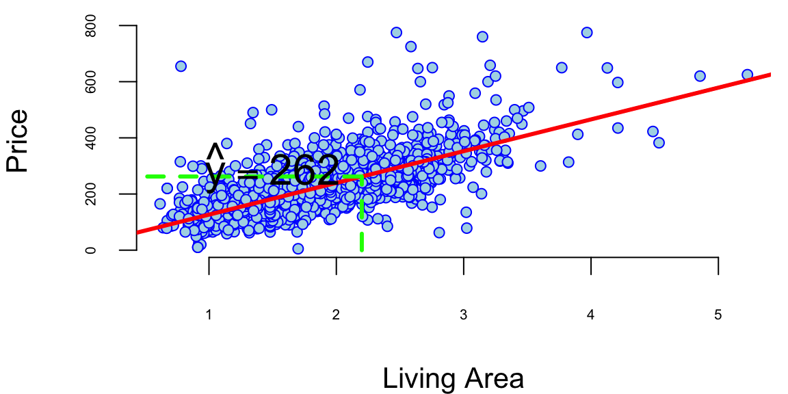
We used lm function to fit the linear model for the housing data. This function uses least squares loss function to estimate the parameters of the line. One of the nice properties of the least squares estimator is that it has a closed-form solution. This means that we can find the values of the parameters that minimize the loss function by solving a system of linear equations rather than using an optimization algorithm. The linear system is obtained by taking the gradient (multivariate derivative) of the loss function with respect to the parameters and setting it to zero. The loss function \[
\mathcal{L}(\beta) = \sum_{i=1}^n (y_i - f_{\beta}(x_i))^2
\] is a quadratic function of the parameters, so the solution is unique and can be found analytically. The gradient of the loss function with respect to the parameters is \[
\nabla \mathcal{L}(\beta) = -2\sum_{i=1}^n (y_i - f_{\beta}(x_i))\nabla f_{\beta}(x_i).
\] Given that \(f_{\beta}(x_i) = \beta^T \psi(x_i)\), the gradient of the loss function with respect to the parameters is \[
\nabla \mathcal{L}(\beta) = -2\sum_{i=1}^n (y_i - \beta^T \psi(x_i))\psi(x_i)^T.
\] Setting the gradient to zero gives us the normal equations \[
\sum_{i=1}^n y_i \psi(x_i)^T = \sum_{i=1}^n \beta^T \psi(x_i) \psi(x_i)^T.
\] In matrix form, the normal equations are \[
\Psi^Ty = \Psi^T\Psi\beta
\tag{12.1}\] where \(\Psi\) is the design matrix with rows \(\psi(x_i)^T\) and \(y\) is the vector of output values. The solution to the normal equations is \[
\hat{\beta} = (\Psi^T\Psi)^{-1}\Psi^Ty.
\]
y = d$price; Psi = cbind(1,d$livingArea);
lhs = t(Psi)%*%Psi; rhs = t(Psi)%*%y
beta = solve(lhs,rhs)
beta[,1] 13 113The function solve solves the Equation 12.1, and indeed finds the same values as the lm function. Essentially this is what the lm function does under the hood. The solve function uses the elimination method to solve the system of linear equations. The method we all learned when we were introduced to linear equations. The technique is known in linear algebra as LU decomposition.
In our housing example we used a linear model to predict the price of a house based on its square footage. The model is simple and easy to interpret, making it suitable for both prediction and interpretation. The model provides insights into the relationship between house size and price, allowing us to understand how changes in house size affect the price. The model can also be used to make accurate predictions of house prices based on square footage. This demonstrates the versatility of linear models for both prediction and interpretation tasks.
Let’s consider another example of using a linear model that allows us to understand the relationship between the performance of stock portfolio managed by John Maynard Keynes and overall market performance.
Example 12.2 (Keynes Investment Performance) John Maynard Keynes was a good investor, achieving a long-term average annual return of 16% while managing the King’s College Cambridge endowment fund from 1921 to 1946. This performance significantly outperformed the overall market during that period. In the 1921-1929 period he experimented with investments in art and currency, as well as cyclical equity investing. However, later in 1930s and onwards Keynes transitioned to a value investing strategy, focusing on undervalued stocks with strong fundamentals. This coincided with the Great Depression, where such investments offered significant opportunities. This shift led to consistent outperformance, with the King’s College endowment generating returns exceeding the market on average. In our analysis we consider his returns during the 1928-1945 period. Below is the plot of his returns.
keynes = read.csv("../data/keynes.csv",header=T)| Year | Keynes | Market | Rate |
|---|---|---|---|
| 1928 | -3.4 | 7.9 | 4.2 |
| 1929 | 0.8 | 6.6 | 5.3 |
| 1930 | -32.4 | -20.3 | 2.5 |
| 1931 | -24.6 | -25.0 | 3.6 |
| 1932 | 44.8 | -5.8 | 1.5 |
| 1933 | 35.1 | 21.5 | 0.6 |
attach(keynes)
# Plot the data
plot(Year,Keynes,pch=20,col=34, cex=3, type='l')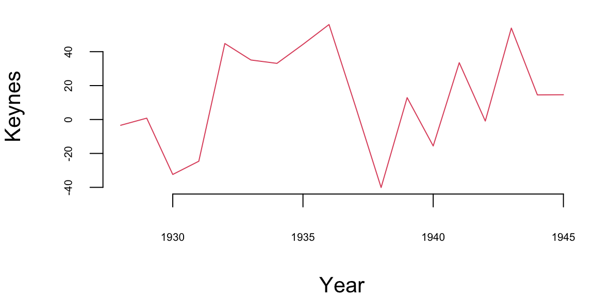
mean(Keynes) 13Let’s compare his performance to the overall stock market. The Dow Jones Industrial Average, grew at an average annual rate of 8.5% during the same period (1921-1946). Keynes was able to consistently generate alpha, exceeding the market’s overall returns.
The plot below shows the relationship scatterplot of the market returns vs Keynes portfolio returns. The correlation coefficient is 0.76, which is high; when markets are doing well, Keynes also did well.
plot(Market, Keynes, xlab="Market Return", ylab="Keynes Excess Return",col=20, pch=16)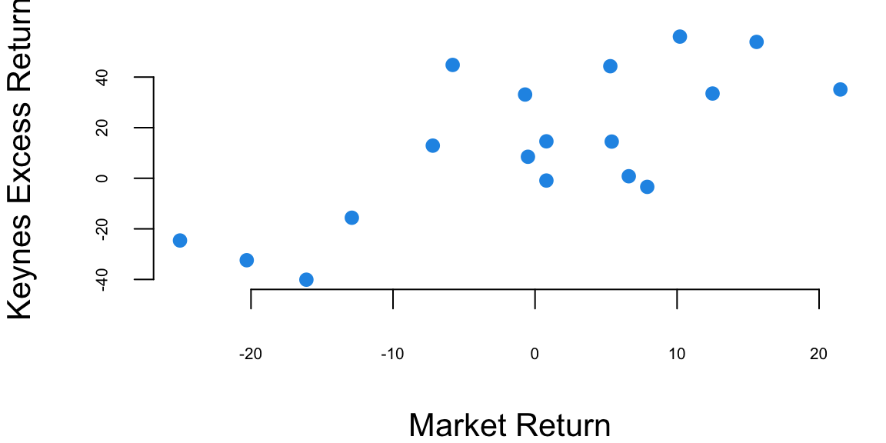
The correlation coefficient is
Code
cor(Keynes,Market) 0.74Now we fit a linear regression model \[ \text{Keynes} = \alpha + \beta \text{Market} \] Note that here instead of generic notations \(\beta_0\) for intercept and \(\beta_1\) for slope, we use \(\alpha\) and \(\beta\), which are common in finance literature.
plot(Market, Keynes, xlab="Market Return", ylab="Keynes Excess Return",col=20, pch=16)
model = lm(Keynes~Market)
abline(model, lwd=3)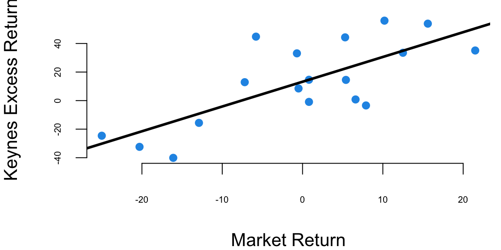
# Extract the model coefficients
coef(model)(Intercept) Market
13.2 1.7 # summary(model)
model %>% tidy() %>% knitr::kable(digits=2)| term | estimate | std.error | statistic | p.value |
|---|---|---|---|---|
| (Intercept) | 13.2 | 4.75 | 2.8 | 0.01 |
| Market | 1.7 | 0.39 | 4.5 | 0.00 |
The intercept of the least squares line is \(\alpha = 13.2\), which is significantly higher than 0. This indicates that Keynes was able to generate higher returns than the market, even when the market was performing well. This is consistent with his value investing strategy, which allowed him to identify undervalued stocks and generate significant alpha.
Now we adjust for the risk-free returns and calculate excess return.
Keynes = Keynes - Rate
Market = Market - Rate
modelnew = lm(Keynes~Market)
modelnew %>% tidy() %>% knitr::kable(digits=2)| term | estimate | std.error | statistic | p.value |
|---|---|---|---|---|
| (Intercept) | 14.5 | 4.69 | 3.1 | 0.01 |
| Market | 1.8 | 0.37 | 4.8 | 0.00 |
We see that after the adjustment, the intercept \(\alpha=14.46\) is now even larger.
12.1 Statistical Properties of Linear Models
Previously we demonstrated how the Central Limit Theorem enables us to derive key statistical properties of the sample mean, including its asymptotic normality, unbiasedness, and the relationship between sample size and estimation precision. These same principles extend naturally to linear models, where we can derive analogous properties for the least squares estimators of regression coefficients.
First, we introduce a regression model using the language of probability. A regression model assumes that the mean of the output variable \(y\) depends linearly on predictors \(x_1,\ldots,x_p\) \[ y = \beta_0 + \beta_1 x + \ldots + \beta_p x_p + \epsilon,~ \text{where}~\epsilon \sim N(0, \sigma^2). \] Often, we use simpler dot-product notation \[ y = \beta^Tx + \epsilon, \] where \(\beta = (\beta_0,\beta_1,\ldots,\beta_p)\) is the vector of regression coefficients and \(x = (1,x_1,\ldots,x_p)\) is the vector of predictors, with 1 appended to the beginning.
A more convenient form of the model is as follows \[ y \mid x \overset{iid}{\sim} N(\beta^Tx, \sigma^2). \]
The additional term \(\epsilon\) is a random variable that captures the uncertainty in the relationship between \(y\) and \(x\); it is called the error term or the residual. The error term is assumed to be normally distributed with mean zero and variance \(\sigma^2\). Thus, the linear regression model has a new parameter \(\sigma^2\) that models dispersion of \(y_i\) around the mean \(\beta^Tx\), let’s see an example.
Estimates and Intervals
In our housing example, we estimated the parameter \(\beta_1\) to be equal to 113.12 and made a conclusion that the price of the house goes up by that amount when the living area goes up by one unit. However, the estimated value is based on a sample. The sample is a result of well-designed data collection procedure and is representative of the population, and we should expect the estimated value to be close to the true value. However, the estimated value is not the true value of the parameter, but an estimate of it. The true value of the parameter is unknown and the estimated value is subject to sampling error.
The sampling error is modeled by the normal distribution. The standard error of the estimate is a measure of the uncertainty in the estimated value of the parameter. The standard error is calculated from the sample data and is used to calculate confidence intervals and p-values for the estimated parameter.
We used the lm function to estimate the parameters of the linear model. The estimated values of the parameters are given in the Estimate column of the output. The estimated value of the intercept is \(\hat \beta_0 = 13.439394\) and the estimated value of the slope is \(\hat \beta_1 = 113.1225418\). These values are calculated using the least squares loss function, which minimizes the sum of squared differences between the predicted and actual values of the output variable. The estimated values of the parameters are subject to sampling error, which is modeled by the normal distribution. The standard error of the estimates is given in the Std. Error column of the output. The standard error is a measure of the uncertainty in the estimated values of the parameters. The t-statistic is the ratio of the estimated coefficient to its standard error. The p-value is the probability of observing a value at least as extreme as the one observed, assuming the null hypothesis is true. In this case, the p-value for the livingArea coefficient is less than 0.05, so we conclude that the coefficient is statistically significant. This means that the size of the house is a statistically significant predictor of the price. The Residual standard error is the standard deviation of the residuals \(\hat y_i - y_i,~i=1,\ldots,n\).
Example 12.3 (House Prices) Let’s go back to the Saratoga Houses dataset
d = read.csv("../data/SaratogaHouses.csv")
d$price = d$price/1000; d$livingArea = d$livingArea/1000
l = lm(price ~ livingArea, data=d)
l %>% tidy() %>% kable()| term | estimate | std.error | statistic | p.value |
|---|---|---|---|---|
| (Intercept) | 13 | 5.0 | 2.7 | 0.01 |
| livingArea | 113 | 2.7 | 42.2 | 0.00 |
The output of the lm function has several components. Besides calculating the estimated values of the coefficients, given in the Estimate column, the method also calculates standard error (Std. Error) and t-statistic (t value) for each coefficient. The t-statistic is the ratio of the estimated coefficient to its standard error. The p-value (Pr(>|t|)) is the probability of observing a value at least as extreme as the one observed, assuming the null hypothesis is true. The null hypothesis is that the coefficient is equal to zero. If the p-value is less than 0.05, we typically reject the null hypothesis and conclude that the coefficient is statistically significant. In this case, the p-value for the livingArea coefficient is less than 0.05, so we conclude that the coefficient is statistically significant. This means that the size of the house is a statistically significant predictor of the price. The Residual standard error is the standard deviation of the residuals \(\hat y_i - y_i,~i=1,\ldots,n\).
The estimated values of the parameters were calculated using least squares loss function discussed above. The residual standard error is also relatively easy to calculate from the model residuals \[ s_e = \sqrt{ \frac{1}{n-2} \sum_{i=1}^n ( \hat y_i - y_i )^2 }. \] Now the question is, how was the p-value for the estimates calculated? And why did we assume that \(\epsilon\) is normally distributed in the first place? The normality of \(\epsilon\) and as a consequence, the conditional normality of \(y \mid x \overset{iid}{\sim} N(\beta^Tx, \sigma^2)\) is easy to explain; it is simply due to mathematical convenience. Plus, this assumption happens to describe the reality well in a wide range of applications. One of those conveniences is our ability to calculate the mean and variance of the distribution of \(\hat \beta_0\) and \(\hat \beta_1\).
To understand how to calculate the p-values, we first notice that there is uncertainty about the values of the parameters \(\beta_i\)s. To get a feeling for the amount of variability in our experiments, imagine that we have two sample data sets. For example, we have housing data from two different realtor firms. Do you think that the estimated value of price per square foot will be the same for both of those? The answer is no. Let’s demonstrate with an example; we simulate 20 data sets from the same distribution and estimate 20 different linear models.
set.seed(92) #Kuzy
d = read.csv("../data/SaratogaHouses.csv")
d$price = d$price/1000; d$livingArea = d$livingArea/1000
plot(d$livingArea, d$price, pch=20, col="blue", xlab="Living Area", ylab="Price")
for (i in 1:10) {
# Sample with replacement
dnew = d[sample(1:nrow(d),replace=T),]
# Fit a linear model
l = lm(price ~ livingArea, data=dnew, subset = sample(1:nrow(d),100))
abline(l, col="green", lwd=3)
}
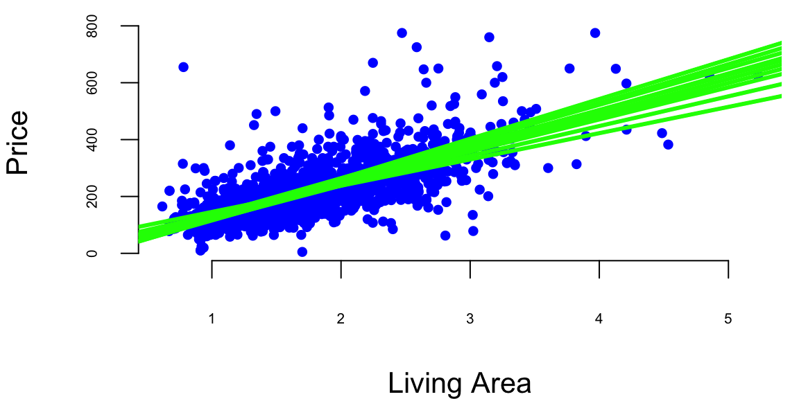
Figure 12.1 shows the results of this simulation. We can see that the estimated coefficients \(\hat \beta_i\) are different for each of the 20 samples. This is due to the sampling error. The sampling error is the difference between the estimated value of a parameter and its true value. The value of \(\beta_1\) will differ from sample to sample. In other words, it will be a random variable. The sampling distribution of \(\beta_1\) describes how it varies over different samples with the \(x\) values fixed. Statistical view of linear regression allows us to calculate confidence and prediction intervals for estimated parameters. It turns out that when least squares principle is used, the estimated \(\hat\beta_1\) is normally distributed: \(\hat\beta_1\mid \beta_1 \sim N( \beta_1 , s_1^2 )\). Let’s see how we can derive this result.
The extension of the central limit theorem, sometimes called the Lindeberg CLT, states that a linear combination of independent random variables that satisfy some mild condition are approximately normally distributed. We can show that estimates of \((\beta_0\ldots,\beta_p)\) are linear combinations of the observed values of \(y\) and are therefore normally distributed. Indeed, if we write the linear regression model in matrix form \[ Y = X \beta + \epsilon, \] where \(Y\) is the vector of observed values of the dependent variable, \(X\) is the matrix of observed values of the independent variables, \(\beta\) is the vector of unknown parameters, and \(\epsilon\) is the vector of errors. Then, if we take the derivative of the loss function for linear regression and set it to zero, we get the following expression for the estimated parameters \[ \hat \beta = AY, \] where \(A = (X^TX)^{-1}X^T\). Due to Lindeberg central limit theorem, \(\hat \beta\) is normally distributed. This is a useful property that allows us to calculate confidence intervals and p-values for the estimated parameters.
Now, we need to compute the mean and variance of \(\hat \beta\). The mean is easy to compute, since the expectation of the sum is the sum of expectations, we have \(\hat{\beta} = A(X\beta + \epsilon)\), hence \[ \hat{\beta} = \beta + A\epsilon \]
The expectation and variance of \(\hat{\beta}\) are then: \[\begin{align*} \E{\hat{\beta}} = & \E{\beta + A\epsilon} = \E{\beta} + \E{A\epsilon} = \beta\\ \Var{\hat{\beta}} = & \Var{A\epsilon} = A\Var{\epsilon}A^T = \sigma^2 A(X^TX)^{-1}A^T = \sigma^2 (X^TX)^{-1} \end{align*}\] Putting together the expectation and variance, we get the following distribution for \(\hat{\beta}\): \[ \hat{\beta} \sim N(\beta, \sigma^2 (X^TX)^{-1}). \]
We can think of the estimated coefficients \(\hat \beta_i\) as an average amount of change in \(y\), when \(x_i\) goes up by one unit. Since this average was calculated using a sample data, it is subject to sampling error and the sampling error is modeled by the normal distribution. Assuming that residuals \(\epsilon\) are independently normally distributed with a variance that does not depend on \(x\) (homoscedasticity), we can calculate the mean and variance of the distribution of \(\hat \beta_i\). This is a useful property that allows us to calculate confidence intervals and p-values for the estimated parameters.
In summary, the statistical view of the linear regression model is useful for understanding the uncertainty associated with the estimated parameters. It also allows us to calculate confidence intervals and prediction intervals for the output variable.
- Average value of output \(y\) is a linear function of input \(x\) and lie on the straight line of regression \(\hat y_i = \beta^Tx_i\).
- The values of \(y\) are statistically independent.
- The true value of \(y = \hat y_i + \epsilon_i\) is a random variable, and it is normally distributed around the mean with variance \(\sigma^2\). This variance is the same for all values of \(y\).
- The estimated values of the parameters \(\hat \beta_i\) are calculated from observed data and are subject to the sampling error and we are not certain about them. This uncertainty is modeled by the normally distributed around the true values \(\beta\). Given that errors \(\epsilon_i\) are homoscedastic and independent, we have \(Var(\hat{\beta}) = \sigma^2 (X^TX)^{-1}\).
Again, consider a house example. Say in our data we have 10 houses with the same squire footage, say 2000. Now the third point states, that the prices of those houses should follow a normal distribution and if we are to compare prices of 2000 sqft houses and 2500 sqft houses, they will have the same standard deviation. The second point means that price of one house does not depend on the price of another house.
All of the assumptions in the regression model can be written using probabilist notations: \[ y \mid x \overset{iid}{\sim} N(\beta^Tx, \sigma^2). \]
In the case when we have only one predictor the variance of the estimated slope \(\hat \beta_1\) is given by \[ \Var{\hat \beta_1} = \frac{\sigma^2}{\sum_{i=1}^n ( x_i - \bar{x} )^2 } = \frac{ \sigma^2 }{ (n-1) s_x^2 }, \] where \(s_x^2\) is the sample variance of \(x\). Thus, there are three factors that impact the size of standard error for \(\beta_1\): sample size (\(n\)), error variance (\(\sigma^2\)), and \(x\)-spread, \(s_x\).
We can empirically demonstrate the sampling error by simulating several samples from the same distribution and estimating several linear models. We can see that the estimated coefficients \(\hat \beta_i\) are normally distributed around the true values \(\beta_i\). If we plot coefficients for 1000 different models, we can see that the empirical distribution resembles a normal distribution.
set.seed(92) #Kuzy
# Read housing data
d = read.csv("../data/SaratogaHouses.csv")
d$price = d$price/1000; d$livingArea = d$livingArea/1000
# Simulate 1000 samples
n = 1000
# Create a matrix to store the results
beta = matrix(0, nrow=n, ncol=2)
# Simulate 1000 samples
for (i in 1:n) {
# Sample with replacement
dnew = d[sample(1:nrow(d),replace=T),]
# Fit a linear model
l = lm(price ~ livingArea, data=dnew)
# Store the coefficients
beta[i,] = coef(l)
}
ind = 2
# Plot the results
plot(beta[,1], beta[,2], col="blue", xlab="Intercept", ylab="Slope", bg="lightblue", cex=0.8)
abline(h=coef(l)[2], lwd=3, col="red")
abline(v=coef(l)[1], lwd=3, col="red")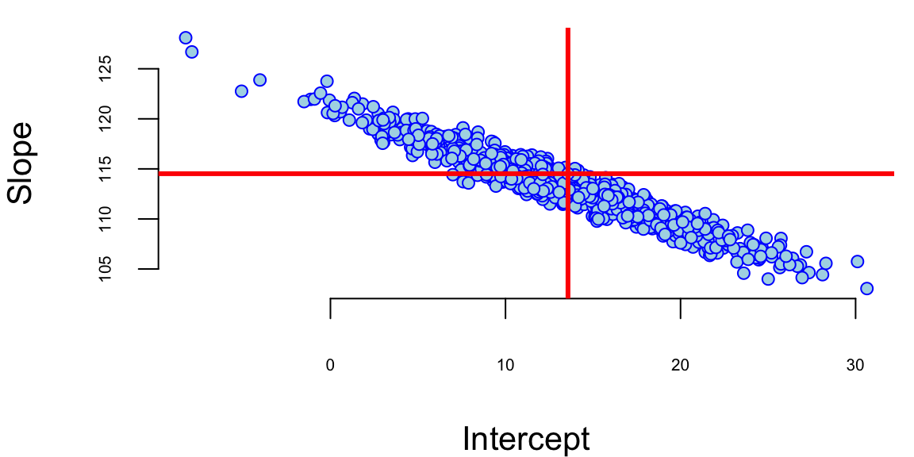
X = cbind(1, d$livingArea)
# Calculate the variance of the coefficients
var = sigma(l)^2 * solve(t(X) %*% X)
varb = var[ind,ind]/0.63
hist(beta[,ind], col="blue", xlab="Intercept", main="",freq=F)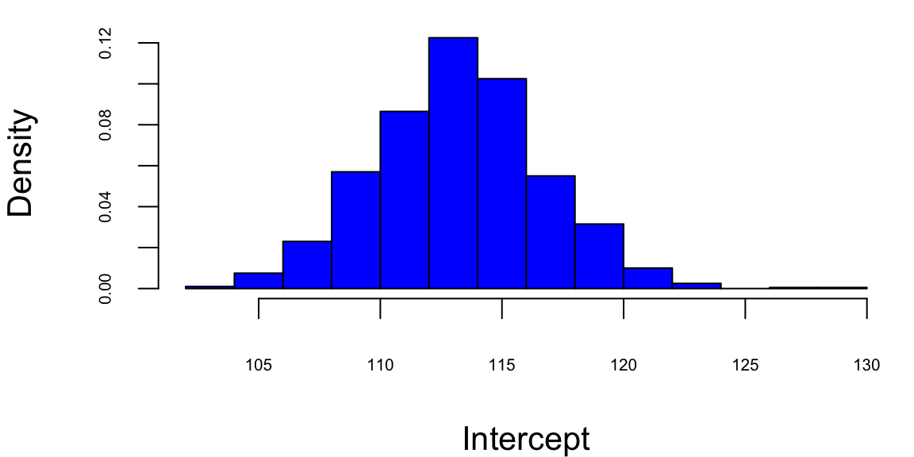
bt = seq(80,140,0.1)Accounting for uncertainty in \(\hat \beta\)s we can calculate confidence intervals for the predicted average \(\hat y\). When we additionally account for the uncertainty in the predicted value \(\hat y\), we can calculate prediction intervals.
Another advantage of adopting a statistical view of the linear regression model is ability to quantify information about potential outliers. Outliers are points that are extreme relative to our model predictions. Recall, that residual is \(e_i = y_i- \hat y_i\). Since our predicted value \(\hat y_i\) follows a normal distribution, the residual also follows a normal distribution, since it is a difference of normal random variable \(\hat y_i\) and a constant \(y_i\). It easy to see that \[e_i \sim N(0, s_e^2),\] where \(s_e^2\) is an empirical estimate of the error’s variance.
Consider the relation between the fitted values \(\hat y_i\) and residuals \(e_i\). Our predictions are given by the line. The residual \(e_i\) and predicted value \(\hat y_i\) for the \(i\)th observation are related via \[ y_i = \hat{y}_i + ( y_i - \hat{y}_i ) = \hat{y}_i + e_i. \]
Residuals allow us to define outliers. They simply have large residuals. We re-scale the residuals by their standard errors. This lets us define \[r_i = \frac{ e_i }{ s_{ e} } =\frac{y_i - \hat{y}_i }{ s_{ e } }\] Since residuals follow normal distribution \(e \sim N(0,\sigma^2)\), in 95% of the time we expect the standardized residuals to satisfy \(- 2 < r_i < 2\). Any observation with \(|r_i| > 3\) is an extreme outlier; it is three sigmas away from the mean.
Another type of observations we are interested in are the influential points. These are observations that affect the magnitude of our estimates \(\hat{\beta}\)s. They are important to find as they typically have economic consequences. We will use Cook’s distance to assess the significance of an influential point. Cook’s distance associated with sample \(i\) measures the change in estimated model parameters \(\hat \beta\) when sample \(i\) is removed from the training data set.
Intuitively, we model regression-back-to-the-mean effect. This is one of the most interesting statistical effects you’ll see in daily life. In statistics, regression does not mean “going backwards”, but rather the tendency for a variable that is extremely high or low to move closer to the average upon subsequent measurement. For example, Francis Galton, who was a cousin of Charles Darwin, in his study on regression to the mean height showed that if your parents are taller than the average, you’ll regress back to the average. While people might expect the children of tall parents to be even taller and the children of short parents to be even shorter, Galton found that this wasn’t the case. Instead, he observed that the heights of the children tended to be closer to the average height for the population. Galton termed this phenomenon “regression towards mediocrity” (now more commonly known as “regression to the mean”). It meant that extreme characteristics (in this case, height) in parents were likely to be less extreme (closer to the average) in their children. It is a classic example that helped introduce and explain this statistical concept. Galton’s finding was one of the first insights into what is now a well-known statistical phenomenon. It doesn’t imply that all individual cases will follow this pattern; rather, it’s a trend observed across a population. It’s important to understand that regression to the mean doesn’t suggest that extreme traits diminish over generations but rather that an extreme measurement is partly due to random variation and is likely to be less extreme upon subsequent measurement.
Another example was documented by Daniel Kahneman and Amos Tversky in their book Thinking, Fast and Slow. They found that when a person performs a task, their performance is partly due to skill and partly due to luck. They observed that when a person performs a task and achieves an extreme result, their subsequent performance is likely to be less extreme. Particularly they studied effect of criticism and praise used by Israeli Air Force fighter pilots trainers. After criticism, the low-scoring pilots were retested. Often, their scores improve. At first glance, this seems like a clear effect of feedback from the trainer. However, some of this improvement is likely a statistical artifact and demonstrates the regression to the mean effect.
Why? Those pilots who initially scored poorly were, statistically speaking, somewhat unlucky. Their low scores may have been due to a bad day, stress, or other factors. When retested, their scores are likely to be closer to their true skill level, which is closer to the average. This natural movement towards the average can give the illusion that the intervention (praise or criticism) was more effective than it actually was. Conversely, if the top performers were praised and retested, we might find their scores decrease slightly, not necessarily due to the inefficacy of the praise but due to their initial high scores being partly due to good luck or an exceptionally good day. In conclusion, in pilot training and other fields, it’s important to consider regression to the mean when evaluating the effectiveness of interventions. Without this consideration, one might draw incorrect conclusions about the impact of training or other changes.
Example 12.4 (Google vs S&P 500) We will demonstrate how we can use statistical properties of a linear regression model to understand the relationship between returns of a google stock and the S&P 500 index. We will use Capital Asset Pricing Model (CAPM) regression model to estimate the expected return of an investment into Google stock and to price the risk. The CAPM model is
\[ \mathrm{GOOG} = \alpha + \beta \mathrm{SP500} + \epsilon \] On the left hand side, we have the return that investors expect to earn from investing into Google stock. In the CAPM model, this return is typically modeled as a dependent variable.
The input variable SP500 represents the average return of the entire US market. Beta measures the volatility or systematic risk of a security or a portfolio in comparison to the market as a whole. A beta greater than 1 indicates that the security is more volatile than the market, while a beta less than 1 indicates it is less volatile. Alpha is the intercept of the regression line, it measures the excess return of the security over the market. The error term \(\epsilon\) captures the uncertainty in the relationship between the returns of Google stock and the market.
In a CAPM regression analysis, the goal is to find out how well the model explains the returns of a security based on its beta. This involves regressing the security’s excess returns (returns over the risk-free rate) against the excess returns of the market. The slope of the regression line represents the beta, and the intercept should ideally be close to the risk-free rate, although in practice it often deviates. This model helps in understanding the relationship between the expected return and the systematic risk of an investment.
Based on the uncertainty associated with the estimates for alpha and beta, we can formulate several hypothesis tests, for example:
| Hypothesis | Question |
|---|---|
| \(H_0: \beta = 0\) | Is Google related to the market? |
| \(H_0: \alpha = 0\) | Does Google outperform the market in a consistent fashion? |
getSymbols(Symbols = c("GOOG","SPY"),from='2017-01-03',to='2023-12-29') "GOOG" "SPY" gret = as.numeric(dailyReturn(GOOG))
spyret = as.numeric(dailyReturn(SPY))
l = lm(gret ~ spyret)
tidy(l) %>% knitr::kable(digits=4)| term | estimate | std.error | statistic | p.value |
|---|---|---|---|---|
| (Intercept) | 0.0003 | 0.0003 | 1.1 | 0.27 |
| spyret | 1.1706 | 0.0240 | 48.8 | 0.00 |
Google vs S&P 500 returns between 2017-2023
plot(gret, spyret, bg="lightblue", xlab="Google Return", ylab="SPY Return")
abline(l, lwd=3, col="red")Here’s what we get after we fit the model using function
Our best estimates are \[ \hat \alpha = 0.0004 \; , \; \hat{\beta} = 1.01 \]
Now we can provide the results for the hypotheses we set at the beginning. Given that the p-value for \(H_0: \beta = 0\) is <2e-16 we can reject the null hypothesis and conclude that Google is related to the market. The p-value for \(H_0: \alpha = 0\) is 0.06, which is greater than 0.05, so we cannot reject the null hypothesis and conclude that Google does not outperform the market in a consistent fashion in the 2017-2023 period.
Further, we can answer some of the other important questions, such as how much will Google move if the market goes up \(10\)%?
alpha = coef(l)[1]
beta = coef(l)[2]
# Calculate the expected return
alpha + beta*0.1(Intercept)
0.12 However, if we look at the earlier period between 2005-2016 (the earlier days of Google) the results will be different.
getSymbols(Symbols = c("GOOG","SPY"),from='2005-01-03',to='2016-12-29'); "GOOG" "SPY" gret = as.numeric(dailyReturn(GOOG))
spyret = as.numeric(dailyReturn(SPY))
l = lm(gret ~ spyret)
tidy(l) %>% knitr::kable(digits=4)| term | estimate | std.error | statistic | p.value |
|---|---|---|---|---|
| (Intercept) | 0.0006 | 0.0003 | 2.2 | 0.03 |
| spyret | 0.9231 | 0.0230 | 40.1 | 0.00 |
plot(spyret, gret, col="blue", ylab="Google Return", xlab="SPY Return", bg = "lightblue", cex=0.8)
abline(l, lwd=3, col="red")
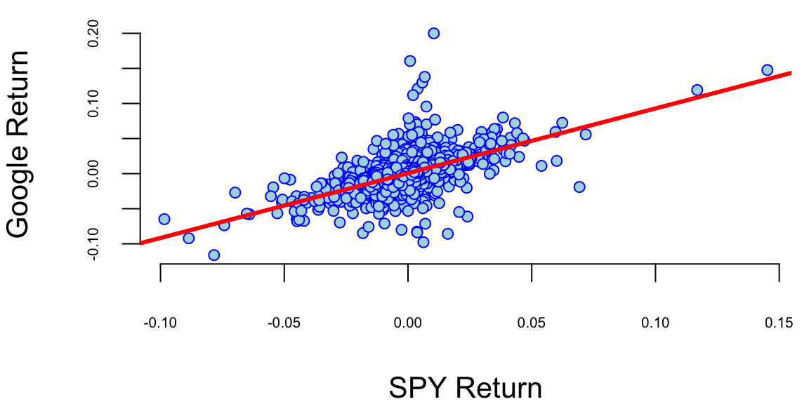
In this period Google did consistently outperform the market. The p-value for \(H_0: \alpha = 0\) is 0.03.
Example 12.5 (CAPM Model for Yahoo! Stock) Rather than estimate \(\mu\) directly, the CAPM estimates the difference between \(\mu\) and the risk-free rate \(r_f\). This quantity \(\mu-r_f\) is known as the expected excess return (excess relative to a risk-free investment). The CAPM relates the expected excess return of a stock to that of an underlying benchmark, typically a broad-based market index. Let \(\mu_M\) and \(\sigma_M\) denote the return and volatility on the market index. The implication of CAPM is that there is a linear relationship between the expected excess return of a stock, \(\mu-r_f\), and the excess return of the market, \(\mu_M-r_f\).
\[
\text{Excess \; Return}_{\text{Stock}} = \beta \; \text{Excess \;
Return}_{\text{Market}}
\] \[
\mu-r_f = \beta(\mu_M - r_f )
\] Put simply, the expected excess return of a stock is \(\beta\) times the excess expected return of the market. Beta (\(\beta\)) is a measure of a stock’s risk in relation to the market. A beta of 1.3 implies that the excess return on the stock is expected to move up or down 30% more than the market. A beta bigger than one implies the stock is riskier than the market and goes up (and down) faster than the market goes up (and down). A beta less than one implies the stock is less risky than the market.
Using the CAPM, the expected return of the stock can now be defined as the risk free interest rate plus beta times the expected excess return of the market, \[ \mu = \text{Expected \; Return}_{\text{Stock}} = r_f+\beta (\mu_M-r_f) \] Beta is typically estimated from a regression of the individual stock’s returns on those of the market. The other parameters are typically measured as the historical average return on the market \(\mu_M\) and the yield on Treasury Bills \(r_f\). Together these form an estimate of \(\mu\). The volatility parameter \(\sigma\) is estimated by the standard deviation of historical returns.
Our qualitative discussion implicitly took the year as the unit of time. For our example, we make one minor change and consider daily returns so that \(\mu\) and \(\sigma\) are interpreted as a daily rate of return and daily volatility (or standard deviation). We use an annual risk-free rate of 5%; this makes a daily risk-free rate of .019%, \(r_f = 0.00019\), assuming there are 252 trading days in a year. A simple historical average is used to estimate the market return (\(\mu_M\)) for the Nasdaq 100. The average annual return is about 23%, with corresponding daily mean \(\mu_M = 0.00083\). A regression using daily returns from 1996-2000 leads to an estimate of \(\beta = 1.38\). Combining these (pieces) leads to an estimated expected return of Yahoo!, \(\mu_{Yahoo} = 0.00019+1.38(0.00083-0.00019) = 0.00107\) on a daily basis. Note that the CAPM model estimates a future return that is much lower than the observed rate over the last three-plus years of .42% per day or 289% per year.
To measure the riskiness of Yahoo! notice that the daily historical volatility is 5%, i.e. \(\sigma = 0.05\). On an annual basis this implies a volatility of \(\sigma \sqrt{T} = 0.05 \sqrt{252} = 0.79\), that is 79%. For comparison, the benchmark Nasdaq 100 has historical daily volatility 1.9% and an annual historical volatility of 30%. The estimates of all the parameters are recorded in Table 12.2.
| Asset | Expected return | Volatility | Regression coefft (s.e.) |
|---|---|---|---|
| Yahoo! | \(\mu = 0.00107\) | \(\sigma = 0.050\) | \(\beta = 1.38 (.07)\) |
| Nasdaq 100 | \(\mu_M = 0.00083\) | \(\sigma_M = 0.019\) | 1 |
| Treasury Bills | \(r_f = 0.00019\) | – | – |
12.2 Factor Regression and Feature Engineering
A linear model assumes that output variable is proportional to the input variable plus an offset. However, this is not always the case. Often, we need to transform input variables by combining multiple inputs into a single predictor, for example by taking a ratio or putting inputs on a different scale, e.g. log-scale. In machine learning, this process is called feature engineering.
One of the classic examples of feature engineering is Fama-French three-factor model which is used in asset pricing and portfolio management. The model states that asset returns depend on (1) market risk, (2) the outperforming of small versus big companies, and (3) the outperformance of high book/market versus small book/market companies, mathematically \[r = R_f + \beta(R_m - R_f) + b_s\cdot SMB + b_v\cdot HML + \alpha\] Here \(R_f\) is risk-free return, \(R_m\) is the return of market, \(SMB\) stands for "Small market capitalization Minus Big" and \(HML\) for "High book-to-market ratio Minus Low"; they measure the historic excess returns of small caps over big caps and of value stocks over growth stocks. These factors are calculated with combinations of portfolios composed by ranked stocks (BtM ranking, Cap ranking) and available historical market data.
Logarithmic and Power Transformations
Consider, the growth of the Apple stock between 2000 and 2024. With the exception of the 2008 financial crisis period and 2020 COVID 19 related declines, the stock price has been growing exponentially. Figure 12.3 shows the price of the Apple stock between 2000 and 2024. The price is closely related to the company’s growth.
getSymbols(Symbols = "AAPL",from='2000-01-01',to='2023-12-31'); "AAPL"plot(AAPL$AAPL.Adjusted, type='l', col="blue", xlab="Date", ylab="Price")The 2008 and 2020 declines are more related to extraneous factors, rather than the growth of the company. Thus, we can conclude that the overall growth of the company is exponential. The growth of a successful company typically follows the rule of compounding. Compounding is a fundamental principle that describes how some quantity grows over time when this quantity increases by a fixed percentage periodically. This is a very common phenomenon in nature and business. For example, if two parents have 2.2 children on average, then the population increases by 10% every generation. Another example is growth of investment in a savings account.
A more intuitive example is probably an investment in a savings account. If you invest \(1000\) in a savings account with \(10\%\) annual interest rate and you get paid once a year, then your account value will be \(1100\) by the end of the year. However, if you get paid \(n\) times a year, and initially invest \(y_0\), the final value \(y\) of the account after \(t\) years will be \[ y = y_0 \times (1 + r/n)^{nt} \] where \(r\) is the annual interest rate. When you get paid every month (\(n=12\)), a traditional payout schedule used by banks, then \[ y = 1000 \times (1 + 0.1/12)^{12} = 1105. \] A value slightly higher than the annual payout of 1100.
The effect of compounding is minimal in the short term. However, the effect of compounding is more pronounced when the growth rate is higher and time periods are longer. For example at \(r=2\), \(n=365\) and 4-year period \(t=4\), you get \[ y = 1000 \times (1 + 2/365)^{3\times 365} = 2,916,565. \] Your account is close to 3 million dollars! Compared to \(n=1\) scenario \[ y = 1000 \times (1 + 2)^{4} = 81,000, \] when you will end up with merely 81 thousand. This is why compounding is often referred to as the “eighth wonder of the world” in investing contexts, emphasizing its power in growing wealth over time.
In general, as \(n\) goes up, the growth rate of the quantity approaches the constant
T = 1:100
r = 1
plot(T, (1+r/T)^T, type='l', col="blue", ylab="Future Value")
abline(h=exp(r), col="red", lwd=3)Figure 12.4 shows the growth of an investment in a savings account when \(n\) increases and return rate is \(100\%\) per year. We can see that the growth rate approaches the constant \(e \approx 2.72\) as \(n\) increases. \[ (1+r/n)^n \rightarrow e^r,~\text{as}~n \rightarrow \infty. \] This limit was first delivered by Leonhard Euler and the number \(e\) is known as Euler’s number.
Coming back to the growth of the Apple company, we can think of it growing at a small constant rate every day. The relation between the time and size of Apple is multiplicative. Meaning when time increases by one day, the size of the company increases by a small constant percentage. This is a multiplicative relation. In contrast, linear relation is additive, meaning that when time increases by one day, the size of the company increases by a constant amount. The exponential growth model is given by the formula \[ y = y_0 \times e^{\beta^Tx}. \] There are many business and natural science examples where multiplicative relation holds. IF we apply the \(\log\) function to both sides of the equation, we get \[ \log y = \log y_0 + \beta^Tx. \] This is a linear relation between \(\log y\) and \(x\). Thus, we can use linear regression to estimate the parameters of the exponential growth model by putting the output variable \(y\) on the log-scale.
Another example of nonlinear relation that can be analyzed using linear regression is when variables are related via a power law. This concept helps us model proportional relationships or ratios. In a multiplicative relationship, when one variable changes on a percent scale, the other changes in a directly proportional manner, as long as the multiplying factor remains constant. For example, the relation between the size of a city and the number of cars registered in the city is given by a power law. When the size of the city doubles, the number of cars registered in the city is also expected to double. The power law model is given by the formula \[ y = \beta_0 x^{\beta_1}. \] If we apply the \(\log\) function to both sides of the equation, we get \[ \log y = \log \beta_0 + \beta_1 \log x. \] This is a linear relation between \(\log y\) and \(\log x\). Thus, we can use linear regression to estimate the parameters of the power law model by putting the output variable \(y\) and input variable \(x\) on the log-scale.
However, there are several caveats when putting variables on the log-scale. We need to make sure that the variable is positive. This means that we cannot apply log transformations to dummy or count variables.
Example 12.6 (World’s Smartest Mammal) We will demonstrate the power relation using data on brain (measured in grams) and body (measured in kilograms) weights for 62 mammal species. The data was collected by Harry J. Jerison in 1973. The dataset contains the following variables:
mammals = read.csv("../data/mammals.csv")
knitr::kable(head(mammals))| Mammal | Brain | Body |
|---|---|---|
| African_elephant | 5712.0 | 6654.00 |
| African_giant_pouched_rat | 6.6 | 1.00 |
| Arctic_Fox | 44.5 | 3.38 |
| Arctic_ground_squirrel | 5.7 | 0.92 |
| Asian_elephant | 4603.0 | 2547.00 |
| Baboon | 179.5 | 10.55 |
Let’s build a linear model.
attach(mammals)
model = lm(Brain~Body)
plot(Body,Brain, pch=21, bg="lightblue")
abline(model, col="red", lwd=3)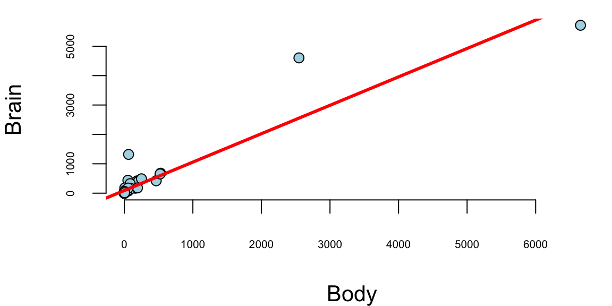
We see a few outliers with suggests that normality assumption is violated. We can check the residuals by plotting residuals against fitted values and plotting fitted vs true values.
plot(model$fitted.values, model$residuals, pch=21, bg="lightblue", xlab="Fitted y", ylab="Residuals")
abline(h=0, col="red", lwd=3)
plot(Brain, model$fitted.values, pch=21, bg="lightblue", xlab="True y", ylab="Fitted y")
abline(a=0,b=1, col="red", lwd=3)
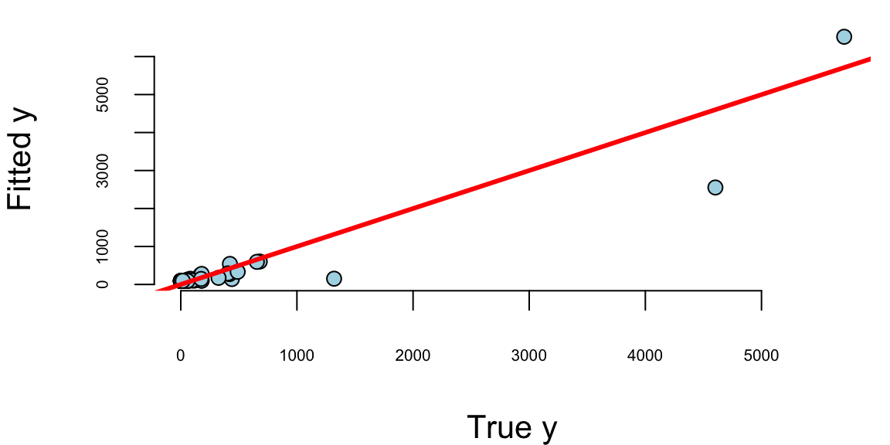
Remember, that residuals should roughly follow a normal distribution with mean zero and constant variance. We can see that the residuals are not normally distributed and the variance increases with the fitted values. This is a clear indication that we need to transform the data. We can try a log-log transformation.
model = lm(log(mammals$Brain)~log(mammals$Body))
model %>% tidy() %>% knitr::kable(digits=2)| term | estimate | std.error | statistic | p.value |
|---|---|---|---|---|
| (Intercept) | 2.18 | 0.11 | 20 | 0 |
| log(mammals$Body) | 0.74 | 0.03 | 23 | 0 |
plot(model$fitted.values, model$residuals, pch=21, bg="lightblue")
abline(h=0, col="red", lwd=3)
plot(log(Brain), model$fitted.values, pch=21, bg="lightblue")
abline(a=0,b=1, col="red", lwd=3)
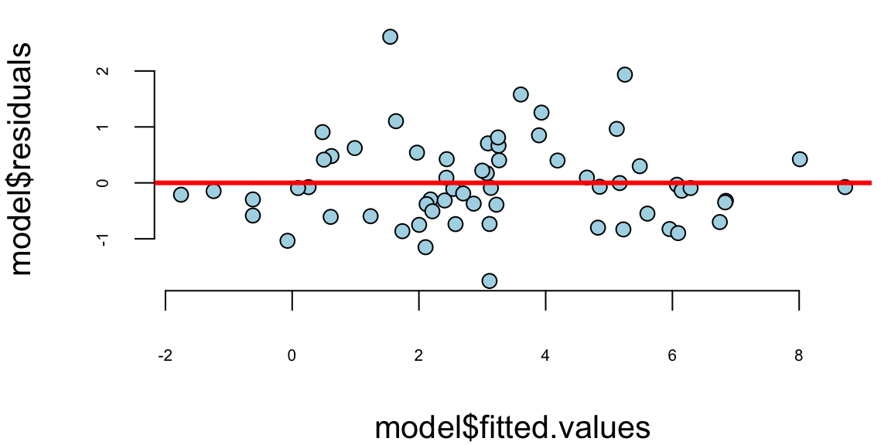

That is much better! The residuals variance is constant and the plot of fitted vs true values shows a linear relationship. The log-log model is given by the formula \[ \log \mathrm{Brain} = 2.18 + 0.74 \log \mathrm{Body}. \] seem to achieve two important goals, namely linearity and constant variance. The coefficients are highly significant.
Although the log-log model fits the data rather well, there are a couple of outliers there. Let us print the observations with the largest residuals.
# res = rstudent(model)
res = model$residuals/sd(model$residuals)
outliers = order(res,decreasing = T)[1:10]
cbind(mammals[outliers,],
Std.Res = res[outliers], Residual=model$residuals[outliers],
Fit = exp(model$fitted.values[outliers])) %>% knitr::kable(digits=2)| Mammal | Brain | Body | Std.Res | Residual | Fit | |
|---|---|---|---|---|---|---|
| 11 | Chinchilla | 64 | 0.42 | 3.41 | 2.61 | 4.7 |
| 34 | Man | 1320 | 62.00 | 2.53 | 1.93 | 190.7 |
| 50 | Rhesus_monkey | 179 | 6.80 | 2.06 | 1.58 | 36.9 |
| 6 | Baboon | 180 | 10.55 | 1.64 | 1.26 | 51.1 |
| 42 | Owl_monkey | 16 | 0.48 | 1.44 | 1.10 | 5.1 |
| 10 | Chimpanzee | 440 | 52.16 | 1.26 | 0.96 | 167.7 |
| 27 | Ground_squirrel | 4 | 0.10 | 1.18 | 0.91 | 1.6 |
| 43 | Patas_monkey | 115 | 10.00 | 1.11 | 0.85 | 49.1 |
| 60 | Vervet | 58 | 4.19 | 1.06 | 0.81 | 25.7 |
| 3 | Arctic_Fox | 44 | 3.38 | 0.92 | 0.71 | 22.0 |
There are two outliers, the Chinchilla and the Human, both have disproportionately large brains!
In fact, the Chinchilla has the largest standardized residual of 3.41. Meaning that the predicted value of 4.7 g is 3.41 standard deviations away from the recorded value of 64 g. This suggests that the Chinchilla is a master race of supreme intelligence! However, after checking more carefully we realized that there was a recording error and the actual weight of an average Chinchilla’s brain is 6.4. We mistyped the decimal separator! Thus the actual residual is 0.4.
abs(model$fitted.values[11] - log(6.4))/sd(model$residuals) 11
0.4 In reality Chinchilla’s brain is not far from an average mammal of this size!
Example 12.7 (Newfood) A six month market test has been performed on the Newfood product, which is a breakfast cereal. The goal is to build a multiple regression model that provides accurate sales forecasts. This dataset represents the outcome of a controlled experiment in which the values of the independent variables that affect sales were carefully chosen by the analyst.
The analysis aims to identify the factors that contribute to sales of a new breakfast cereal and to quantify the effects of business decisions such as the choice of advertising level, location in store, and pricing strategies.
| variable | description |
|---|---|
sales |
new cereal sales |
price |
price |
adv |
low or high advertising (\(0\) or \(1\)) |
locat |
bread or breakfast section (\(0\) or \(1\)) |
inc |
neighborhood income |
svol |
size of store |
First, we need to understand which variables need to be transformed. We start by running the “kitchen-sink” regression with all variables. Then we perform diagnostic checks to assess model assumptions and identify potential issues. Based on these diagnostics, we decide which variables should be transformed. After running the new model with transformations, we perform additional diagnostics and variable selection to refine the model. Using the final model after transformations and eliminating variables, we examine what the largest Cook’s distance is to identify influential observations. Finally, we provide a summary of coefficients and their statistical significance.
First, let’s examine the correlation matrix to understand the relationships between all variables in the dataset. This will help us identify potential multicollinearity issues and understand the strength and direction of associations between variables before building our regression model.
newfood = read.csv("../data/newfood.csv")
attach(newfood)
names(newfood) "sales" "price" "adv" "locat" "income" "svol" "city" "indx" # knitr::kable()
head(newfood)| sales | price | adv | locat | income | svol | city | indx |
|---|---|---|---|---|---|---|---|
| 225 | 24 | 0 | 0 | 7.3 | 34 | 3 | 1 |
| 190 | 24 | 0 | 0 | 7.3 | 34 | 3 | 2 |
| 205 | 24 | 0 | 0 | 7.3 | 34 | 3 | 3 |
| 323 | 24 | 0 | 0 | 8.3 | 41 | 4 | 1 |
| 210 | 24 | 0 | 0 | 8.3 | 41 | 4 | 2 |
| 241 | 24 | 0 | 0 | 8.3 | 41 | 4 | 3 |
# correlation matrix
cm = cor(cbind(sales,price,adv,locat,income,svol))
cm[upper.tri(cm, diag = TRUE)] = NA
# knitr::kable(as.table(round(cm, 3)))
as.table(round(cm, 3)) %>% knitr::kable()| sales | price | adv | locat | income | svol | |
|---|---|---|---|---|---|---|
| sales | NA | NA | NA | NA | NA | NA |
| price | -0.66 | NA | NA | NA | NA | NA |
| adv | 0.00 | 0.00 | NA | NA | NA | NA |
| locat | 0.00 | 0.00 | 0.00 | NA | NA | NA |
| income | 0.16 | -0.13 | -0.75 | 0.00 | NA | NA |
| svol | 0.38 | -0.18 | -0.74 | -0.04 | 0.81 | NA |
Remember, correlations between variables are not the same as regression coefficients (\(\beta\)’s)! Looking at the correlation matrix, we can see that total sales volume (svol) is negatively correlated with advertising (adv), and income (income) is also negatively correlated with advertising (adv). The question is how might these negative correlations impact our ability to estimate the true advertising effects in our regression model?
as.table(round(cm[2:4, 1:3], 3)) %>% knitr::kable()| sales | price | adv | |
|---|---|---|---|
| price | -0.66 | NA | NA |
| adv | 0.00 | 0 | NA |
| locat | 0.00 | 0 | 0 |
There’s no correlation in the \(X\)’s by design! Let’s start by only including price, adv, locat
model = lm(sales~price+adv+locat)
model %>% tidy() %>% knitr::kable(digits=2)| term | estimate | std.error | statistic | p.value |
|---|---|---|---|---|
| (Intercept) | 562.31 | 53.1 | 10.58 | 0.00 |
| price | -12.81 | 1.8 | -7.20 | 0.00 |
| adv | 0.22 | 14.5 | 0.02 | 0.99 |
| locat | -0.22 | 14.5 | -0.02 | 0.99 |
Why is the marketer likely to be upset by this regression? Why is the economist happy? Let’s add income and svol to the regression and use log-log model.
model = lm(log(sales) ~ log(price) + adv + locat +
log(income) + log(svol))
model %>% tidy() %>% knitr::kable(digits=2)| term | estimate | std.error | statistic | p.value |
|---|---|---|---|---|
| (Intercept) | 8.41 | 1.39 | 6.06 | 0.00 |
| log(price) | -1.74 | 0.22 | -7.90 | 0.00 |
| adv | 0.15 | 0.10 | 1.49 | 0.14 |
| locat | 0.00 | 0.06 | 0.02 | 0.99 |
| log(income) | -0.52 | 0.50 | -1.06 | 0.29 |
| log(svol) | 1.03 | 0.26 | 4.04 | 0.00 |
Why no logs for adv and locat variables? The log(svol) coefficient is close to one!
The reason we don’t apply logarithms to adv and locat variables is because they are binary categorical variables (taking values 0 or 1). Taking the logarithm of 0 is undefined, and taking the logarithm of 1 equals 0, which would not provide any meaningful transformation. For binary variables, the exponential transformation in the final model interpretation directly gives us the multiplicative effect on sales when the variable changes from 0 to 1.
Regarding the log(svol) coefficient being close to one (1.03), this suggests that sales scale approximately proportionally with store volume. A coefficient of 1.0 would indicate perfect proportional scaling, meaning a 1% increase in store volume would lead to a 1% increase in sales. Our coefficient of 1.03 indicates slightly more than proportional scaling—a 1% increase in store volume leads to a 1.03% increase in sales, suggesting some economies of scale or network effects in larger stores.
On the transformed scale (log-log model), \[ \log sales=8.41 - 1.74 \log price + 0.150 {\text{adv}} + 0.001 {\text{locat}} - 0.524 \log inc + 1.03 \log svol \] On the un-transformed scale, \[ \text{sales} = e^{8.41} ( \text{price} )^{-1.74} e^{ 0.15 \text{adv} } e^{ 0.001 \text{locat}} ( \text{inc} )^{-0.524} ( \text{svol} )^{1.03} \] In the log-log regression model, the relationship between sales and the continuous variables (price, income, and store volume) follows a power function relationship. This means that a 1% change in these variables leads to a proportional change in sales according to their respective coefficients. Specifically, a 1% increase in price leads to a 1.74% decrease in sales, a 1% increase in income leads to a 0.524% decrease in sales, and a 1% increase in store volume leads to a 1.03% increase in sales.
In contrast, the binary variables (advertising and location) follow an exponential relationship with sales. When advertising is present (adv=1), sales increase by a factor of e^0.15 = 1.16, representing a 16% improvement. Similarly, when a store is in a good location (locat=1), sales increase by a factor of e^0.001 = 1.001, representing a 0.1% improvement. This exponential relationship arises because these variables are binary (0 or 1) and cannot be log-transformed, so their effects are multiplicative on the original sales scale.
The log-log regression model reveals several important relationships between the independent variables and sales performance.
- Price elasticity is \(\hat{\beta}_{\text{price}} = - 1.74\). A \(1\)% increase in price will drop sales \(1.74\)%
- \(\mathrm{adv}=1\) increases
salesby a factor of \(e^{0.15} = 1.16\). That’s a \(16\)% improvement
We should delete the locat variable from our regression model because it is statistically insignificant. The coefficient for locat has a very small magnitude (0.001) and a high p-value, indicating that there is insufficient evidence to reject the null hypothesis that this variable has no effect on sales. Including statistically insignificant variables in a model can lead to overfitting and reduce the model’s predictive accuracy on new data. By removing locat, we create a more parsimonious model that focuses only on the variables that have meaningful relationships with the outcome variable.
Now, we are ready to use our model for prediction. predict.lm provides a \(\hat{Y}\)-prediction given a new \(X_f\)
modelnew = lm(log(sales)~log(price)+adv+log(income)+log(svol))
modelnew %>% tidy() %>% knitr::kable(digits=2)| term | estimate | std.error | statistic | p.value |
|---|---|---|---|---|
| (Intercept) | 8.41 | 1.37 | 6.1 | 0.00 |
| log(price) | -1.74 | 0.22 | -8.0 | 0.00 |
| adv | 0.15 | 0.10 | 1.5 | 0.14 |
| log(income) | -0.52 | 0.49 | -1.1 | 0.29 |
| log(svol) | 1.03 | 0.25 | 4.1 | 0.00 |
newdata=data.frame(price=30,adv=1,income=8,svol=34)
predict.lm(modelnew, newdata, interval="confidence", level=0.99) fit lwr upr
1 5.2 4.9 5.5Exponentiate-back to find \(\text{sales} = e^{5.1739} = 176.60\).
12.3 Interactions
In many situations, \(X_1\) and \(X_2\) interact when predicting \(Y\). An interaction occurs when the effect of one independent variable on the dependent variable changes at different levels of another independent variable. For example, consider a study analyzing the effect of study hours \(X_1\) and a tutoring program \(X_2\), a binary variable where 0 = no tutoring, 1 = tutoring) on test scores \(Y\). Without an interaction term, we assume the effect of study hours on test scores is the same regardless of tutoring. With an interaction term, we can explore whether the effect of study hours on test scores is different for those who receive tutoring compared to those who do not. Here are a few more examples when there is potential interaction.
Examples of potential interactions include whether gender changes the effect of education on wages, whether patients recover faster when taking drug A, and how advertisement affects price sensitivity. Interactions are particularly useful with dummy variables. We can build a kitchen-sink model with all possible dummies (day of the week, gender, etc.).
If we think that the effect of \(X_1\) on \(Y\) depends on the value of \(X_2\), we model it using a linear relation \[ \beta_1 = \beta_{10} + \beta_{11} X_2 \] and the model without interaction \(Y = \beta_0 + \beta_1 X_1 + \beta_2 X_2\) becomes \[ Y = \beta_0 + \beta_1 X_1 + \beta_2 X_2 + \beta_3 X_1 X_2 + \epsilon. \] The interaction term captures the effect of \(X_1\) on \(Y\) when \(X_2=1\). The coefficient \(\beta_3\) is the difference in the effect of \(X_1\) on \(Y\) when \(X_2=1\) and \(X_2=0\). If \(\beta_3\) is significant, then there is an interaction effect. If \(\beta_3\) is not significant, then there is no interaction effect. The coefficients \(\beta_1\) and \(\beta_2\) are called marginal effects.
In R:
model = lm(y = x1 * x2)estimnates \(y = \beta_0 + \beta_1 X_1 + \beta_2 X_2 + \beta_3 X_1 X_2 + \epsilon\), and
model = lm(y = x1:x2)estimates only \(y = \beta_3 X_1 X_2 + \epsilon\)
If \(\beta_3\) is significant there’s an interaction effect and we must leave \(\beta_1\) and \(\beta_2\) in the model whether they are significant or not.
When \(X_2 = D\) is a dummy variable with values of zero or one, we typically run a regression of the form \[y = \beta_0 + \beta_1 X_1 + \beta_2 X_1 \star D + \epsilon\] The coefficient \(\beta_1 + \beta_2\) is the effect of \(X_1\) when \(D=1\). The coefficient \(\beta_1\) is the effect when \(D=0\).
Example 12.8 (Orange Juice) Understanding how advertising affects consumer price sensitivity is a fundamental question in marketing analytics. Do promotional campaigns make consumers more or less sensitive to price changes? To explore this question, we analyze a dataset from the orange juice category that includes sales data from 83 Chicagoland stores. This dataset provides rich information including price, sales volume (measured as log units moved), brand identity, and whether the product was featured in store displays or advertising circulars.
Let’s begin by examining the structure of the data and the basic relationships between variables.
oj = read.csv("./../data/oj.csv")
knitr::kable(oj[1:5,1:10], digits=2)| store | brand | week | logmove | feat | price | AGE60 | EDUC | ETHNIC | INCOME |
|---|---|---|---|---|---|---|---|---|---|
| 2 | tropicana | 40 | 9.0 | 0 | 3.9 | 0.23 | 0.25 | 0.11 | 11 |
| 2 | tropicana | 46 | 8.7 | 0 | 3.9 | 0.23 | 0.25 | 0.11 | 11 |
| 2 | tropicana | 47 | 8.2 | 0 | 3.9 | 0.23 | 0.25 | 0.11 | 11 |
| 2 | tropicana | 48 | 9.0 | 0 | 3.9 | 0.23 | 0.25 | 0.11 | 11 |
| 2 | tropicana | 50 | 9.1 | 0 | 3.9 | 0.23 | 0.25 | 0.11 | 11 |
model = lm(logmove ~ log(price)*feat, data=oj)
model %>% tidy() %>% knitr::kable(digits=2)| term | estimate | std.error | statistic | p.value |
|---|---|---|---|---|
| (Intercept) | 9.66 | 0.02 | 588 | 0 |
| log(price) | -0.96 | 0.02 | -51 | 0 |
| feat | 1.71 | 0.03 | 56 | 0 |
| log(price):feat | -0.98 | 0.04 | -23 | 0 |
model = lm(log(price)~ brand-1, data = oj)
model %>% tidy() %>% knitr::kable(digits=2)| term | estimate | std.error | statistic | p.value |
|---|---|---|---|---|
| branddominicks | 0.53 | 0 | 254 | 0 |
| brandminute.maid | 0.79 | 0 | 382 | 0 |
| brandtropicana | 1.03 | 0 | 500 | 0 |
The dataset includes three major brands: Dominick’s (the store brand), Minute Maid, and Tropicana. We can visualize the price distributions and the relationship between price and sales for these brands.
brandcol <- c("green","red","gold")
oj$brand = factor(oj$brand)
boxplot(log(price) ~ brand, data=oj, col=brandcol)
plot(logmove ~ log(price), data=oj, col=brandcol[oj$brand], pch=20)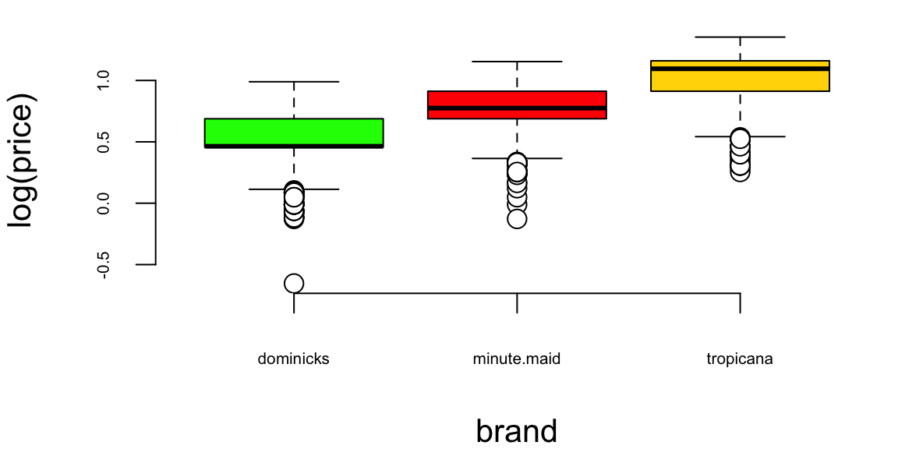
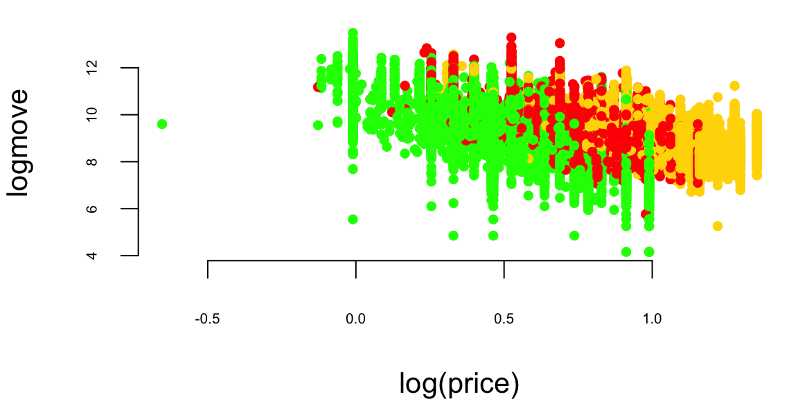
The boxplot reveals that Tropicana commands premium pricing, while Dominick’s store brand is positioned as the value option. The scatterplot shows a clear negative relationship between price and sales, as expected from basic economic theory: higher prices lead to lower sales volume.
A critical modeling decision is whether to use logarithmic transformations for our variables. Let’s examine the relationship between price and sales on both the original and log scales to determine which specification better captures the underlying relationship.
First, we plot sales against price on the original scale:
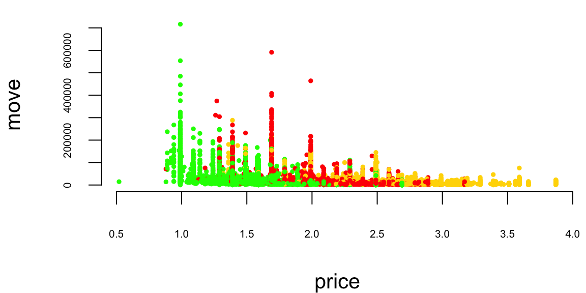
The pattern suggests a nonlinear relationship that might be better captured with a transformation. Next, we examine the relationship between price and log(sales):
l1 <- loess(logmove ~ price, data=oj, span=2)
smoothed1 <- predict(l1)
ind = order(oj$price)
plot(logmove ~ price, data=oj, col=brandcol[oj$brand], pch=16, cex=0.5, ylab="log(move)")
lines(smoothed1[ind], x=oj$price[ind], col="blue", lwd=2)
While this shows some improvement, the relationship still exhibits curvature. Finally, we examine the log-log specification:
par(mar = c(4, 4, 0.1, 0.1), bty="n")
plot(logmove ~ log(price), data=oj, col=brandcol[oj$brand], pch=16, cex=0.5, ylab="log(move)")
for(i in 1:3) {
brand_data <- oj[oj$brand == levels(oj$brand)[i], ]
l2 <- lm(logmove ~ log(price), data=brand_data)
smoothed2 <- predict(l2)
ind <- order(brand_data$price)
lines(smoothed2[ind], x=log(brand_data$price[ind]), col='blue', lwd=2)
}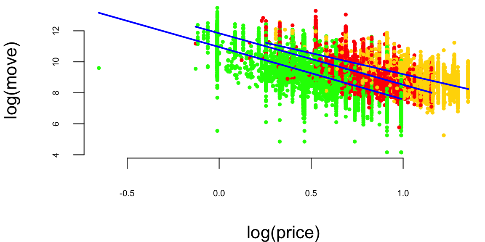
The log-log specification produces a much more linear relationship. This makes economic sense: the relationship between price and sales is multiplicative rather than additive. A 10% increase in price leads to a proportional percentage decrease in sales, regardless of the starting price level. This constant elasticity model is the standard approach in demand analysis.
Our central research question is whether featuring a product in advertisements affects consumers’ price sensitivity. We start with a baseline model that includes both log price and the advertising indicator: \[ \log(\mathrm{sales}) = \beta_0 + \beta_1\log(\mathrm{price}) + \beta_2 \mathrm{feat}. \]
However, this model assumes that advertising only shifts demand up or down, without changing how consumers respond to price. To test whether advertising actually changes price sensitivity, we need to allow the price coefficient \(\beta_1\) to vary with advertising. We can model this by assuming that the price sensitivity depends linearly on the advertising indicator: \[ \beta_1 = \beta_3 + \beta_4\mathrm{feat}. \]
Substituting this into our demand equation gives us an interaction model: \[ \log(\mathrm{sales}) = \beta_0 + (\beta_3 + \beta_4\mathrm{feat})\log(\mathrm{price}) + \beta_2 \mathrm{feat}. \]
Expanding this expression yields: \[ \log(\mathrm{sales}) = \beta_0 + \beta_3\log(\mathrm{price}) + \beta_4\mathrm{feat} \times \log(\mathrm{price}) + \beta_2 \mathrm{feat}. \]
The coefficient \(\beta_4\) on the interaction term tells us how much price sensitivity changes when the product is featured in advertising. Let’s estimate this model and compare it to simpler specifications.
First, we fit the basic model with only log price:
lm(logmove ~ log(price), data=oj) %>% tidy() %>% knitr::kable(digits=2)| term | estimate | std.error | statistic | p.value |
|---|---|---|---|---|
| (Intercept) | 10.4 | 0.02 | 679 | 0 |
| log(price) | -1.6 | 0.02 | -87 | 0 |
This simple model suggests a price elasticity of approximately -3.1, meaning a 1% increase in price leads to roughly a 3.1% decrease in sales.
Next, we add brand effects and the advertising indicator without interactions:
lm(logmove ~ log(price) + feat + brand, data=oj) %>%
tidy() %>%
knitr::kable(digits=2)| term | estimate | std.error | statistic | p.value |
|---|---|---|---|---|
| (Intercept) | 10.28 | 0.01 | 708 | 0 |
| log(price) | -2.53 | 0.02 | -116 | 0 |
| feat | 0.89 | 0.01 | 85 | 0 |
| brandminute.maid | 0.68 | 0.01 | 58 | 0 |
| brandtropicana | 1.30 | 0.01 | 88 | 0 |
Now we estimate the full model with the interaction between price and advertising:
ojreg <- lm(logmove ~ log(price)*feat, data=oj)
ojreg %>% tidy() %>% knitr::kable(digits=2)| term | estimate | std.error | statistic | p.value |
|---|---|---|---|---|
| (Intercept) | 9.66 | 0.02 | 588 | 0 |
| log(price) | -0.96 | 0.02 | -51 | 0 |
| feat | 1.71 | 0.03 | 56 | 0 |
| log(price):feat | -0.98 | 0.04 | -23 | 0 |
The results reveal a striking finding: the interaction coefficient is -0.98, which is highly statistically significant. When products are not featured (feat = 0), the price elasticity is -0.96. However, when products are featured in advertising (feat = 1), the price elasticity becomes \(-0.96 + (-0.98) = -1.94\), essentially doubling in magnitude. This means that advertising makes consumers nearly twice as sensitive to price changes.
This result seems counterintuitive at first. We might expect that advertising would make consumers less price-sensitive by building brand loyalty or highlighting non-price attributes. Why would advertising increase price sensitivity?
The explanation lies in the promotional strategy employed by retailers. Let’s examine the pricing behavior during advertising campaigns:
par(mar = c(4, 4, 0.1, 0.1), bty="n")
doj = oj %>% filter(brand=="dominicks")
par(mfrow=c(1,3), mar=c(4.2,4.6,2,1))
boxplot(price ~ feat, data = oj[oj$brand=="dominicks",], col=c(2,3),
main="Dominick's", ylab="Price ($)")
boxplot(price ~ feat, data = oj[oj$brand=="minute.maid",], col=c(2,3),
main="Minute Maid", ylab="Price ($)")
boxplot(price ~ feat, data = oj[oj$brand=="tropicana",], col=c(2,3),
main="Tropicana", ylab="Price ($)")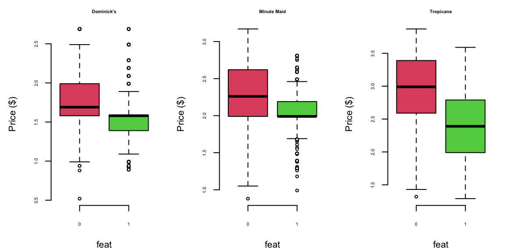
The boxplots reveal the key insight: prices are systematically lower when products are featured (feat = 1) compared to when they are not (feat = 0). This is a classic promotional pricing strategy where advertising and price discounts are bundled together. Retailers use advertising to draw attention to temporary price reductions.
The increased price sensitivity we observe during advertising periods is not caused by the advertising itself making consumers more price-conscious. Rather, it reflects the fact that advertising campaigns coincide with periods of price variation, and consumers who respond to advertisements are precisely those who are most price-sensitive. The advertising serves as a signal that draws price-sensitive consumers into the market, creating a selected sample with higher elasticity.
This example demonstrates the importance of carefully interpreting interaction effects and understanding the underlying business practices that generate the data. What appears to be an advertising effect on price sensitivity is actually a selection effect driven by the correlation between advertising and pricing strategies.
12.4 Categorical Variables and Dummy Encoding
In our orange juice analysis, we want to understand how brand affects sales. Intuitively, we might want to include brand in our regression model:
\[ \log(\mathrm{sales}) = \beta_0 + \beta_1\log(\mathrm{price}) + \xcancel{\beta_2\mathrm{brand}} \]
However, we immediately encounter a problem: brand is a categorical variable, not a numerical one. We have three brands in our dataset - Dominick’s, Minute Maid, and Tropicana - but these are labels, not numbers. How can we incorporate such categorical information into a mathematical equation that requires numerical coefficients?
The solution lies in creating dummy variables (also called indicator variables). For a categorical variable with \(k\) categories, we create \(k-1\) binary variables, each taking the value 1 if the observation belongs to that category and 0 otherwise. One category is designated as the reference category and is represented when all dummy variables equal zero.
For our three-brand scenario, we create two dummy variables as shown in the table below:
| Brand | Intercept | brandminute.maid | brandtropicana |
|---|---|---|---|
| minute.maid | 1 | 1 | 0 |
| tropicana | 1 | 0 | 1 |
| dominicks | 1 | 0 | 0 |
This encoding transforms our regression equation into:
\[ \log(\mathrm{sales}) = \beta_0 + \beta_1\log(\mathrm{price}) + \beta_{21}\mathrm{brandminute.maid} + \beta_{22}\mathrm{brandtropicana}. \]
Fortunately, statistical software like R handles this transformation automatically when you include a categorical variable in your model specification:
lm(logmove ~ log(price)+brand, data=oj) %>%
tidy() %>%
knitr::kable(digits=2)| term | estimate | std.error | statistic | p.value |
|---|---|---|---|---|
| (Intercept) | 10.83 | 0.01 | 745 | 0 |
| log(price) | -3.14 | 0.02 | -137 | 0 |
| brandminute.maid | 0.87 | 0.01 | 67 | 0 |
| brandtropicana | 1.53 | 0.02 | 94 | 0 |
Example 12.9 (Golf Performance Data) Dave Pelz has written two best-selling books for golfers, Dave Pelz’s Short Game Bible, and Dave Pelz’s Putting Bible. These books have become essential reading for serious golfers looking to improve their performance through data-driven analysis and scientific methodology.
Dave Pelz was formerly a “rocket scientist” (literally) at NASA, where he worked on the Apollo space program. His background in physics and engineering provided him with the analytical skills to revolutionize golf instruction through data analytics. His systematic approach to analyzing golf performance helped him refine his teaching methods and develop evidence-based strategies for improving players’ games. Through his research, Pelz discovered that it’s the short-game that matters most for overall scoring performance.
One of Pelz’s most famous findings concerns the optimal speed for a putt. Through extensive data collection and analysis, he determined that the best chance to make a putt is one that will leave the ball \(17\) inches past the hole, if it misses. This counterintuitive result challenges the common belief that golfers should aim to leave putts just short of the hole. Pelz’s research showed that putts hit with this specific speed have the highest probability of going in, as they account for the natural variations in green speed, slope, and other factors that affect putt trajectory.
Now, we demonstrate how to use data to improve your golf game. We analyze the dataset that contains comprehensive year-end performance statistics for 195 professional golfers from the 2000 PGA Tour season. This rich dataset captures technicical abilities of the players as well as financial success (measured by the amount of prize money they made). Each observation represents season’s averages of the players’ performance and total prize money. List below shows the variables in the dataset.
| Variable | Description |
|---|---|
nevents |
The number of official PGA events included in the statistics |
money |
The official dollar winnings of the player |
drivedist |
The average number of yards driven on par 4 and par 5 holes |
gir |
Greens in regulation, measured as the percentage of time that the first (tee) shot on a par 3 hole ends up on the green, or the second shot on a par 4 hole ends up on the green, or the third shot on a par 5 hole ends up on the green |
avgputts |
The average number of putts per round |
We will analyze these data to determine which of the variables nevents, drivedist, gir, and avgputts is most important for winning money on the PGA Tour. We begin by performing a regression of Money on all explanatory variables:
d00 = read_csv("../data/pga-2000.csv")
d18 = read_csv("../data/pga-2018.csv")model18 = lm(money ~ nevents + drivedist + gir + avgputts, data=d18)
model00 = lm(money ~ nevents + drivedist + gir + avgputts, data=d00)
model00 %>% tidy() %>% knitr::kable(digits=2)| term | estimate | std.error | statistic | p.value |
|---|---|---|---|---|
| (Intercept) | 1.5e+07 | 4206466 | 3.5 | 0.00 |
| nevents | -3.0e+04 | 11183 | -2.7 | 0.01 |
| drivedist | 2.1e+04 | 6913 | 3.1 | 0.00 |
| gir | 1.2e+05 | 17429 | 6.9 | 0.00 |
| avgputts | -1.5e+07 | 2000905 | -7.6 | 0.00 |
Let’s look at the residuals:
hist(rstandard(model00), breaks=20, col="lightblue",
xlab = "Standardized Residual", main="")It seems like we need to measure money on a log scale. Let’s transform with log(Money) as it has much better residual diagnostic plots.
m = lm(formula = log(money) ~ nevents + drivedist + gir + avgputts, data = d00)
m %>% tidy() %>% knitr::kable(digits=2)| term | estimate | std.error | statistic | p.value |
|---|---|---|---|---|
| (Intercept) | 36.15 | 3.58 | 10.10 | 0.00 |
| nevents | -0.01 | 0.01 | -0.94 | 0.35 |
| drivedist | 0.01 | 0.01 | 2.40 | 0.02 |
| gir | 0.17 | 0.01 | 11.18 | 0.00 |
| avgputts | -21.13 | 1.70 | -12.42 | 0.00 |
par(mar = c(4,4.5,0,0),mfrow=c(1,1))
model00log = lm(log(money) ~ nevents + drivedist + gir + avgputts, data=d00)
model00log %>% tidy() %>% knitr::kable(digits=2)| term | estimate | std.error | statistic | p.value |
|---|---|---|---|---|
| (Intercept) | 36.15 | 3.58 | 10.10 | 0.00 |
| nevents | -0.01 | 0.01 | -0.94 | 0.35 |
| drivedist | 0.01 | 0.01 | 2.40 | 0.02 |
| gir | 0.17 | 0.01 | 11.18 | 0.00 |
| avgputts | -21.13 | 1.70 | -12.42 | 0.00 |
hist(rstandard(model00log), breaks=20, col="lightblue",
xlab = "Standardized Residual", main="")
arrows(x0 = 3,y0 = 20,x1 = 3.2,y1 = 2,length = 0.1)
text(x = 3,y = 22,labels = "Tiger Woods", cex=1.5)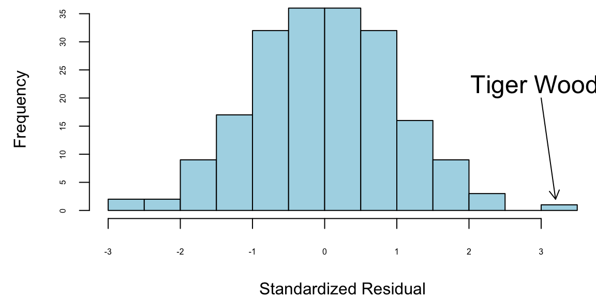
Using log scale for money gives us a better model. We will keep it for now. How about selectng variables. Notice, that \(t\)-stats for nevents is \(<1.5\). Thus, we can remove it.
m1 = lm(formula = log(money) ~ drivedist + gir + avgputts, data = d00)
m1 %>% tidy() %>% knitr::kable(digits=2)| term | estimate | std.error | statistic | p.value |
|---|---|---|---|---|
| (Intercept) | 36.17 | 3.58 | 10.1 | 0.00 |
| drivedist | 0.01 | 0.01 | 2.5 | 0.01 |
| gir | 0.17 | 0.01 | 11.2 | 0.00 |
| avgputts | -21.37 | 1.68 | -12.7 | 0.00 |
It is obvious that fewer putts indicate a better golfer. However, decreasing the average number of putts per round by one is extremely difficult to achieve.
Evaluating the Coefficients
Greens in Regulation (GIR) has a \(\hat{\beta} = 0.17\). If I can increase my GIR by one, I’ll earn \(e^{0.17} = 1.18\)% An extra \(18\)%.
DriveDis has a \(\hat{\beta} = 0.014\). A \(10\) yard improvement, I’ll earn \(e^{0.014 \times 10} =e^{0.14} = 1.15\)% An extra \(15\)%.
Caveat: Everyone has gotten better since 2000!
Tiger Woods was nine standard deviations better than what the model predicted, while taking the natural logarithm of money earnings significantly improves the residual diagnostics and an exponential model appears to fit the data well as evidenced by the good residual diagnostic plots; furthermore, the t-ratios for the number of events variable are consistently under 1.5, indicating it may not be a significant predictor.
The outliers represent the biggest over and under-performers in terms of money winnings when compared with their performance statistics, and Tiger Woods, Phil Mickelson, and Ernie Els won major championships by performing exceptionally well during tournaments with substantial prize money available.
We can see the over-performers and under-performers in the data.
| name | money | Predicted | Error | |
|---|---|---|---|---|
| 1 | Tiger Woods | 9188321 | 3584241 | 5604080 |
| 2 | Phil Mickelson | 4746457 | 2302171 | 2444286 |
| 3 | Ernie Els | 3469405 | 1633468 | 1835937 |
| 4 | Hal Sutton | 3061444 | 1445904 | 1615540 |
| 20 | Notah Begay III | 1819323 | 426061 | 1393262 |
| 182 | Steve Hart | 107949 | -1186685 | 1294634 |
Now, let’s extract the list of underperformers, which are given by large negative residuals. According to our model, Glasson and Stankowski should win more money based on their performance statistics, but they are not achieving the expected earnings. This could be due to several factors: they might be performing well in practice rounds but struggling under tournament pressure, they could be playing in fewer high-payout events, or their performance metrics might not capture other important aspects of tournament success like clutch putting or mental toughness during critical moments.
| name | money | Predicted | Error | |
|---|---|---|---|---|
| 47 | Fred Couples | 990215 | 1978477 | -988262 |
| 52 | Kenny Perry | 889381 | 1965740 | -1076359 |
| 70 | Paul Stankowski | 669709 | 1808690 | -1138981 |
| 85 | Bill Glasson | 552795 | 1711530 | -1158735 |
| 142 | Jim McGovern | 266647 | 1397818 | -1131171 |
Lets look at 2018 data, the highest earners are
| name | nevents | money | drivedist | gir | avgputts |
|---|---|---|---|---|---|
| Justin Thomas | 23 | 8694821 | 312 | 69 | 1.7 |
| Dustin Johnson | 20 | 8457352 | 314 | 71 | 1.7 |
| Justin Rose | 18 | 8130678 | 304 | 70 | 1.7 |
| Bryson DeChambeau | 26 | 8094489 | 306 | 70 | 1.8 |
| Brooks Koepka | 17 | 7094047 | 313 | 68 | 1.8 |
| Bubba Watson | 24 | 5793748 | 313 | 68 | 1.8 |
Overperformers
| name | money | Predicted | Error | |
|---|---|---|---|---|
| 1 | Justin Thomas | 8694821 | 5026220 | 3668601 |
| 2 | Dustin Johnson | 8457352 | 6126775 | 2330577 |
| 3 | Justin Rose | 8130678 | 4392812 | 3737866 |
| 4 | Bryson DeChambeau | 8094489 | 3250898 | 4843591 |
| 5 | Brooks Koepka | 7094047 | 4219781 | 2874266 |
| 6 | Bubba Watson | 5793748 | 3018004 | 2775744 |
| 9 | Webb Simpson | 5376417 | 2766988 | 2609429 |
| 11 | Francesco Molinari | 5065842 | 2634466 | 2431376 |
| 12 | Patrick Reed | 5006267 | 2038455 | 2967812 |
| 84 | Satoshi Kodaira | 1471462 | -1141085 | 2612547 |
Underperformers
| name | money | Predicted | Error | |
|---|---|---|---|---|
| 102 | Trey Mullinax | 1184245 | 3250089 | -2065844 |
| 120 | J.T. Poston | 940661 | 3241369 | -2300708 |
| 135 | Tom Lovelady | 700783 | 2755854 | -2055071 |
| 148 | Michael Thompson | 563972 | 2512330 | -1948358 |
| 150 | Matt Jones | 538681 | 2487139 | -1948458 |
| 158 | Hunter Mahan | 457337 | 2855898 | -2398561 |
| 168 | Cameron Percy | 387612 | 3021278 | -2633666 |
| 173 | Ricky Barnes | 340591 | 3053262 | -2712671 |
| 176 | Brett Stegmaier | 305607 | 2432494 | -2126887 |
Our analysis reveals three particularly interesting effects from the golf performance data, with Tiger Woods demonstrating exceptional performance as an outlier that is eight standard deviations above the model’s predictions, indicating his extraordinary success relative to his statistical metrics, while the model shows that increasing driving distance by ten yards corresponds to a fifteen percent increase in earnings, suggesting that power off the tee provides a significant competitive advantage in professional golf, and additionally, improving greens in regulation (GIR) by one percentage point leads to an eighteen percent increase in earnings, highlighting the importance of approach shot accuracy in determining financial success on the PGA Tour, with the model also successfully identifying both under-performers and over-performers, players whose actual earnings significantly differ from what their statistical performance would predict, providing valuable insights into which players may be exceeding or falling short of expectations based on their measurable skills, demonstrating the practical applications of statistical modeling in sports analytics and performance evaluation.
12.5 Bayes Regression
Consider a linear regression \[ f_{\beta}(x) = x^T\beta + \epsilon,~~~\epsilon \sim N(0,\sigma_e). \] We put a zero mean Gaussian prior on the model parameters \[ \beta \sim N(0,\Sigma). \] Bayesian inference is to calculate posterior given the data \[ p(\beta\mid y,X) = \dfrac{p(y\mid X,\beta)p(\beta)}{p(y\mid X)}. \] Product of two Gaussian density functions lead to another Gaussian \[ \begin{aligned} p(\beta\mid y,X) & \propto \exp\left(-\dfrac{1}{2\sigma_e^2}(y-\beta^TX)^T(y-\beta^TX)\right)\exp\left(-\dfrac{1}{2}\beta^T\Sigma^{-1}\beta\right)\\ & \propto \exp\left(-\dfrac{1}{2}(\beta - \bar\beta)^T\left(\dfrac{1}{\sigma_e^2XX^T + \Sigma^{-1}}\right)(\beta-\bar\beta)\right) \end{aligned} \]
Thus, the posterior is \[ \beta\mid X,y \sim N(\bar\beta,A^{-1}), \] where \(A = \left(\sigma_e^{-2}XX^T + \Sigma\right)\), and \(\bar\beta = \sigma_e^{-2}A^{-1}Xy\).
Example 12.10 (Posterior) Consider a model with \(p = 1\) \[ y = \beta_0 + \beta_1 x + \epsilon, ~~ \beta_i \sim N(0,1),~~~\sigma_e = 1 \] Let’s plot a sample from the prior set of functions
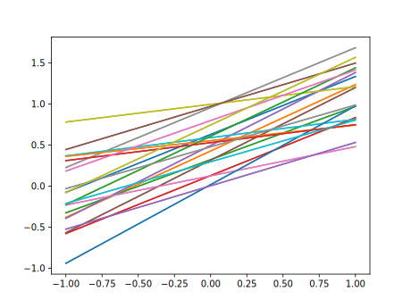
Now, say we observed two points \((1,1)\) and \((2,2)\), we can calculate the posterior \(\beta \mid X,y \sim N(0.833, 0.166)\)
Why our posterior mean is not 1?
Horseshoe for Linear regression
The linear regression model is given by \[Y = X\beta + \varepsilon,\]
where \(Y\) and \(\varepsilon\) are vectors of length \(n\), \(\beta\) is a vector of length \(p\) and \(X\) is an \(n \times p\)-matrix. We assume \(\varepsilon \sim \mathcal{N}(0, I_n)\). The main function for the horseshoe for the linear regression model is horseshoe and it implements the algorithm of Bhattacharya et al (2016).
The options of horseshoe are the same as for HS.normal.means (discussed above, although in case of linear regression it is less clear which prior to use for \(\tau\)). We illustrate the use of horseshoe via an example.
We create a 50 by 100 design matrix \(X\) filled with realizations of independent normal random variables. The first 10 entries of the vector \(\beta\) are set equal to six (the signals) and the remaining 90 entries are set equal to zero (the noise).
X <- matrix(rnorm(50*100), 50)
beta <- c(rep(6, 10), rep(0, 90))
y <- X %*% beta + rnorm(50)We use the horseshoe and plot the posterior mean and marginal 95% credible interval per parameter in red. The true parameter values are shown in black.
library(horseshoe)
hs.object <- horseshoe(y, X, method.tau = "truncatedCauchy", method.sigma ="Jeffreys") 1000
2000
3000
4000
5000
6000df <- data.frame(index = 1:100,
truth = beta,
post.mean = hs.object$BetaHat,
lower.CI <- hs.object$LeftCI,
upper.CI <- hs.object$RightCI
)
ggplot(data = df, aes(x = index, y = truth)) +
geom_point(size = 2) +
theme_classic() + ylab("") +
geom_point(aes(x = index, y = post.mean), size = 2, col = "red") +
geom_errorbar(aes(ymin = lower.CI, ymax = upper.CI), width = .1, col = "red") +
ggtitle("Black = truth, Red = estimates with 95% credible intervals")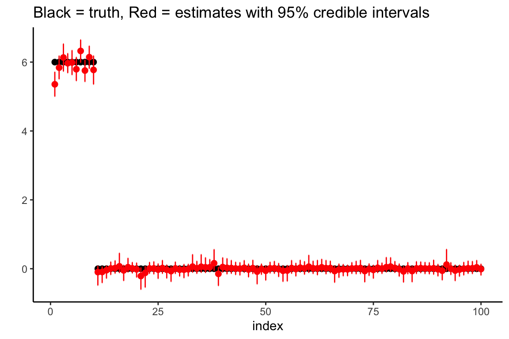
We again perform variable selection. The function, HS.var.select, is the same as described above for the normal means problem. Here we show how it works when variables are selected by checking whether 0 is in the credible interval. For the thresholding procedure, please refer to the normal means example above.
We perform variable selection:
df$selected.CI <- HS.var.select(hs.object, df$y, method = "intervals")The result is a vector of zeroes and ones, with the ones indicating that the observations is suspected to correspond to an actual signal. We now plot the results, coloring the estimates/intervals blue if a signal is detected and red otherwise.
ggplot(data = df, aes(x = index, y = truth)) +
geom_point(size = 2) +
theme_classic() + ylab("") +
geom_point(aes(x = index, y = post.mean, col = factor(selected.CI)),
size = 2) +
geom_errorbar(aes(ymin = lower.CI, ymax = upper.CI, col = factor(selected.CI)),
width = .1) +
theme(legend.position="none") +
ggtitle("Black = truth, Blue = selected as signal, Red = selected as noise")12.6 Quantile Regression
The least absolute deviations (Quantile) loss function is the sum of absolute differences between the predicted and actual values. It is used for regression problems with continuous variables. The goal is to minimize the sum of absolute errors (SAE) to improve the predictive performance of the model. Given observed data set the least absolute deviations estimator is the value of \(\beta\) that minimizes the sum of absolute errors \[ \mini_{\beta}\sum_{i=1}^n |y_i - f_{\beta}(x_i)| \] The least absolute deviations estimator is also known as the quantile estimator, where the quantile is set to 0.5 (the median). This is because the least absolute deviations estimator is equivalent to the median of the data (the 0.5 quantile).
Again, in the unconditional case, when we do not observe any inputs \(x\), the least absolute deviations estimator is the sample median. To solve this minimization problem, we need to consider the concept of a subgradient, since the absolute value function is not differentiable at zero.
A subgradient generalizes the idea of a derivative for functions that are not differentiable everywhere. For a convex function \(f(x)\), a subgradient at a point \(x_0\) is any value \(g\) such that for all \(x\), \[ f(x) \geq f(x_0) + g(x - x_0). \] The set of all such \(g\) is called the subdifferential at \(x_0\).
For the absolute value function, the subgradient is given by: \[ \frac{\partial}{\partial x} |x| = \begin{cases} 1 & \text{if } x > 0 \\ -1 & \text{if } x < 0 \\ [-1, 1] & \text{if } x = 0 \end{cases} \] That is, at \(x = 0\), any value between \(-1\) and \(1\) is a valid subgradient.
Applying this to our minimization problem, the subgradient of the sum of absolute deviations with respect to \(\beta\) is: \[ \sum_{i=1}^n \operatorname{sign}(y_i - \beta). \] This equals to zero only when the number of positive items equals the number of negative which happens when \(\beta\) is the median.
A more rigorous and non-calculus proof is due to Schwertman, Gilks, and Cameron (1990). Let \(y_1,\ldots,y_n\) be the observed data and \(\hat{\beta}\) be the least absolute deviations estimator. Then we have \[ \sum_{i=1}^n |y_i - \hat{\beta}| \leq \sum_{i=1}^n |y_i - \beta| \] for any \(\beta\). Let \(y_{(1)},\ldots,y_{(n)}\) be the ordered data. Then we have \[ \sum_{i=1}^n |y_i - \hat{\beta}| \leq \sum_{i=1}^n |y_i - y_{(i)}| \] Let \(y_{(n/2)}\) be the median of the data. Then we have \[ \sum_{i=1}^n |y_i - \hat{\beta}| \leq \sum_{i=1}^n |y_i - y_{(n/2)}| \] which implies that \(\hat{\beta}\) is the median of the data.
The generalization of the median estimator to the case of estimating value of quantile \(\tau\) is as follows \[ \mini_{\beta}\sum_{i=1}^n \rho_{\tau}(y_i - \beta) \] where \(\rho_{\tau}(x) = x(\tau - \mathbb{I}(x < 0))\) is the quantile loss function. If we set \(\tau = 0.5\), the loss function becomes the absolute value function and we get the median estimator. The expected loss is \[ E \rho_{\tau}(y - \beta) = (\tau-1)\int_{-\infty}^{\beta} (y-\beta)dF(y) + \tau\int_{\beta}^{\infty} (y-\beta)dF(y) \] Differentiating the expected loss function with respect to \(\beta\) and setting it to zero gives the quantile estimator \[ \hat{\beta}_{\tau} = F^{-1}(\tau) \] where \(F^{-1}\) is the quantile function of the distribution of \(y\). Thus, the problem of finding a quantile is solved via optimization.
A key difference between the least squares and least absolute deviations estimators is their sensitivity to outliers. The least squares estimator is sensitive to outliers because it squares the errors, giving more weight to large errors. In contrast, the least absolute deviations estimator is less sensitive to outliers because it takes the absolute value of the errors, giving equal weight to all errors. This makes the least absolute deviations estimator more robust to outliers than the least squares estimator.
Another difference is the computational complexity. Least squares estimator can be found by solving a linear system of equations. There are fast and efficient algorithms for it, making the least squares estimator computationally efficient. In contrast, the least absolute deviations estimator requires more computationally expensive numerical optimization algorithms.
There is also a hybrid loss function, called Huber loss, which combines the advantages of squared errors and absolute deviations. It uses SE for small errors and AE for large errors, making it less sensitive to outliers.